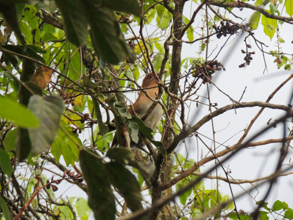
Nome popular:
Nome científico:
Características morfológicas:
Alimentação e comportamento:
Distribuição geográfica:
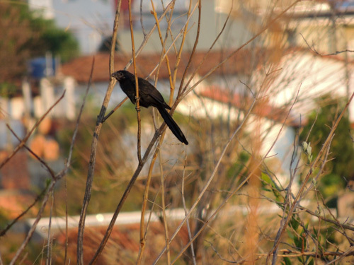
Nome popular:
Nome científico:
Características morfológicas:
Alimentação e comportamento:
Distribuição geográfica:
Nome popular: Anu-preto
Nome científico: Crotophaga ani
Características morfológicas: Corpo franzino, mede entre 35 e 36 centímetros de comprimento e pesa entre
76 e 222 gramas de peso, sendo que as fêmeas da espécie apresentam peso menor que os machos.
Sua coloração é preto uniforme, possui um bico alto, forte e curto. Cauda longa e graduada.
Alimentação e comportamento: É essencialmente carnívoro, comendo gafanhotos, percevejos, aranhas, miriápodes
etc. Preda também lagartas peludas e urticantes, lagartixas e camundongos. Pesca na água rasa, e periodicamente
come frutas, bagas, coquinhos e sementes, sobretudo na época seca, quando há escassez de artrópodes.
Vive em paisagens abertas com moitas e capões entre pastos e jardins; ao longo das rodovias costuma ser quase a
única que se vê, como habitante de lavouras abandonadas. Prefere lugares úmidos. Sendo um fraco voador, mal
resiste à brisa, e qualquer vento mais forte leva-o para longe. Gosta de apanhar sol e banhar-se na poeira.
Muitas vezes adquire plumagem com coloração adventícia, ficando fortemente tingida com a cor da terra do local
ou de cinza e carvão, sobretudo se antes correr pelo capim melado. Pela manhã e após as chuvas pousa de asas
abertas para enxugar-se. À noite, para se esquentar, junta-se em filas apertadas ou aglomera-se em montões
desordenados; acontece de um correr sobre as costas dos outros que formam a fila, para forçar a sua penetração
entre os companheiros; arrumam as suas plumagens reciprocamente. Procura moitas de taquara para pernoitar.
Distribuição geográfica: Ocorre desde o sudeste dos Estados Unidos da América no estado da Flórida, nas
ilhas do Caribe, sudeste do México no estado de Quintana Roo, Costa Rica até o Equador, arquipélago de Galápagos
até o norte da Argentina. Também ocorre na porção leste da América do Sul, desde o leste da cordilheira dos Andes
na Venezuela, Guianas, Brasil até o norte do Uruguai.

Nome popular: Ariramba-de-cauda-ruiva
Nome científico: Galbula ruficauda
Características morfológicas: Mede entre 19 e 25 centímetros e pesa entre 18 e 28 gramas. À primeira vista,
parece um grande beija-flor, devido tanto ao seu bico longo e fino, quanto à coloração verde-amarelada
iridescente de grande parte da plumagem. No macho as partes superiores, incluindo a face, a coroa e o peito
são de coloração verde brilhante metálico. A cauda é relativamente longa e gradual. O par de penas retrizes
centrais é alongado e tem uma cor verde metálica, as demais penas retrizes externas são castanhas. O ventre,
crisso, as penas sob a cauda e a parte de baixo das asas são castanhos. O bico é preto, fino e longo como é
característico da família Galbulidae e seu tamanho varia de 4 a 5 centímetros. A coloração das pernas varia
de marrom amarelada a cinza carne.
Alimentação e comportamento: Caça exclusivamente insetos em voo, com grande destreza e velocidade para apanhar
presas desde o tamanho de uma pequena abelha sem ferrão (meliponíneos) até libélulas e mariposas. Após capturar
o inseto, volta ao ponto de partida e bate-o repetidamente contra o poleiro, retirando asas e quebrando a
carapaça externa, o que facilita a ingestão. É encontrado nas áreas florestadas e secas, nos ambientes mais
adensados, especialmente em suas bordas e clareiras. Pousa em galhos e cipós expostos, de 1 a 4 metros de altura.
Esses poleiros são usados seguidamente como pontos de espreita das presas e locais de alimentação. Uma vez
localizado, este local facilita o encontro dessa ave, representante de uma família exclusiva das Américas.
Distribuição geográfica: Ocorre da região do México até a Bolívia e Argentina e em boa parte do Brasil, sendo
raro na região sul.
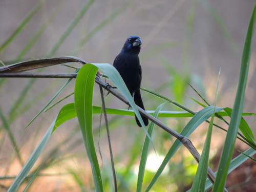
Nome popular:
Nome científico:
Características morfológicas:
Alimentação e comportamento:
Distribuição geográfica:
Nome popular: Azulão
Nome científico: Cyanoloxia brissonii
Características morfológicas: Tem bico avantajado e preto. O macho é totalmente azul-escuro, com partes
azuis brilhantes. A fêmea e os filhotes são totalmente pardos, com as partes inferiores um pouco mais claras.
Canto sonoro e melodioso. Emite um canto diferente no crepúsculo e pela madrugada.
As populações do sul do Brasil possuem tamanho corporal mais avantajado, quando comparado com as do Nordeste.
Alimentação e comportamento: Sua alimentação é bem variada, sobretudo composta de sementes, frutas e insetos.
É encontrado em áreas com água abundante na beira de pântanos, grotas, brejos, florestas ralas, matas secundárias
espessas e plantações.
Esta ave é territorialista. Não é possível vê-la em bando. Se existe um casal em certa localização, só será possível
encontrar outro casal a uma certa distância. Os filhotes de azulão ficam com seus pais até um certo tempo, depois
já partem para uma vida “independente”, pois o instinto territorialista do azulão não o deixará ficar por perto após
estar na fase adulta. Assim, o filhote terá que achar seu próprio território e sua parceria para acasalamento. Se um
macho invade o território de outro, com certeza haverá um conflito, e será bem violento. Por isso existe um certo
respeito entre as aves e seus territórios, mas sempre há aquele mais valente que, por território ou por uma fêmea,
entrará em conflito e conquistará o desejado.
Distribuição geográfica: Sua distribuição geográfica abrange do Nordeste do Brasil ao Rio Grande do Sul, bem como
na Bolívia, Paraguai e Argentina.
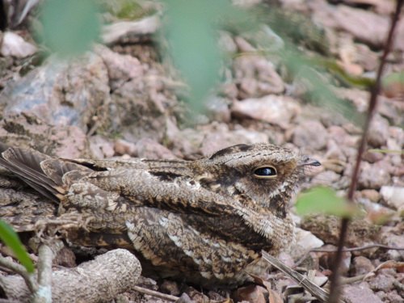
Nome popular:
Nome científico:
Características morfológicas:
Alimentação e comportamento:
Distribuição geográfica:
Nome popular: Bacurau-chintã
Nome científico: Hydropsalis parvula
Características morfológicas: Mede cerca de 20 cm de comprimento. O macho apresenta a garganta, uma larga faixa
nas asas e a ponta da cauda (vista de baixo) brancas e a fêmea possui a garganta amarelada e não tem branco nas asas
e na cauda.
Alimentação e comportamento: Alimenta-se de insetos que captura em voo. Comum em campos com árvores e arbustos.
É noturno e vive no chão, descansando durante o dia sob arbustos. Pousa sobre troncos para cantar.
Distribuição geográfica: Presente em todo o Brasil, e também da Venezuela à Bolívia e Argentina. Migratório,
aparece em quantidade em algumas regiões, em determinadas épocas do ano, como no Estado de Minas Gerais (setembro).
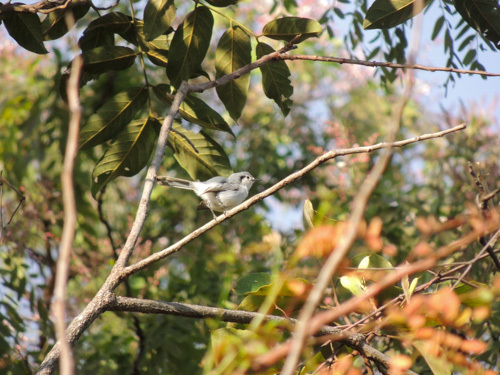
Nome popular:
Nome científico:
Características morfológicas:
Alimentação e comportamento:
Distribuição geográfica:
Nome popular: Balança-rabo-de-máscara
Nome científico: Polioptila dumicola
Características morfológicas: Tem cerca de 12 centímetros de comprimento, e pesa menos de 7 gramas.
Aparenta estar em busca contínua por alimentação. Seu lado superior é cinzento e a parte inferior é branca
(cinzento-azulado na região sul). O macho tem uma máscara preta no rosto.
Tem uma voz bonita e na primavera está sempre cantando muito suavemente. Além da voz “grä”, “zeret-grä”
(chamada; advertência), no período reprodutivo o macho possui um canto alto e melodioso com diversos motivos
alternados, que podem lembrar os de outras aves, alguns terminando como risadas.
Alimentação e comportamento: É uma ave insetívora. Vive nos campos abertos, entre árvores espinhentas. Ocorre
no cerrado e em áreas urbanas. Vive abertamente na copa das árvores, exposto ao vento e à forte insolação. Aprecia
regiões áridas. Mantém a cauda em constante movimento, quer vertical, quer lateralmente. Se excitado abre a mesma em
leque, expondo a contrastante coloração branca e preta.
Distribuição geográfica: Ocorre na Bolívia, Paraguai, Argentina, Uruguai e Brasil (sudeste do Pará, Goiás, Minas
Gerais a São Paulo, Rio Grande do Sul e Mato Grosso). Foi registrada
também em Santa Catarina pela primeira vez em 2000, no município de Chapecó.
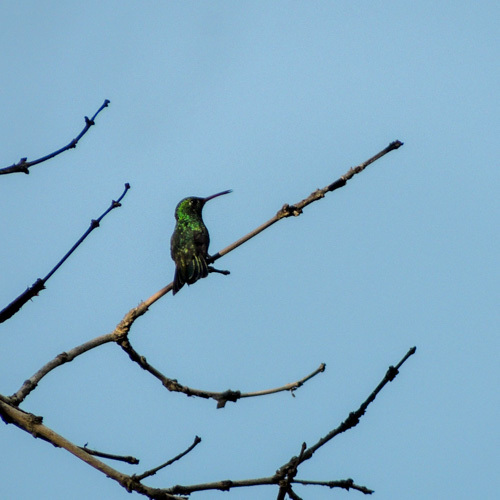
Nome popular:
Nome científico:
Características morfológicas:
Alimentação e comportamento:
Distribuição geográfica:
Nome popular: Beija-flor-de-garganta-verde
Nome científico: Chionomesa fimbriata
Características morfológicas: Mede de 8,5 a 11 cm de comprimento e pesa em torno de 5 g. A cor dominante é um
verde claro, com tons brilhantes sob luz adequada. Olhos escuros e, atrás do olho, destaca-se um ponto branco,
mesmo tom da barriga e do desenho afunilado do peito, terminando na garganta de aspecto escamado, delimitada pelo
verde dominante do pescoço e peito. Asas escuras e cauda arredondada com as penas centrais na cor verde-bronzeada,
as demais penas da cauda são progressivamente escuras. Bico longo e reto, com a maxila escura e a mandíbula na cor
rosada com a ponta escura. Os adultos possuem pernas e pés escuros. O centro do peito, abdome inferior e crisso são
brancos, enquanto que os flancos são da cor verde com brilho bronzeado.
Macho e fêmea são muito semelhantes. As fêmeas adultas têm barras brancas na garganta. A plumagem da fêmea é
ligeiramente mais opaca que a do macho.
Os jovens possuem coloração um pouco mais marrom-acinzentada com o abdome branco.
Alimentação e comportamento: Apesar de pequeno, é ágil e inquieto, podendo bater as asas até 70 vezes por segundo.
Tal velocidade lhe garante a habilidade de ficar parado no ar em pleno voo. Para manter tal velocidade, gasta muita
energia, por isso alimenta-se cerca de 15 vezes por hora. Pode alimentar-se do suco direto da laranja posta no
comedouro para outras aves. Alimenta-se também do néctar da flor brinco-de-princesa, que fica nas praças públicas.
Adapta-se a ambientes urbanos e é um dos maiores frequentadores de garrafinhas de água com açúcar ou flores nas
grandes cidades do centro do Brasil.
Distribuição geográfica: Ocorre na capoeira, na restinga, também no Norte da América do Sul, em todo o Brasil
até o Paraguai e Bolívia.
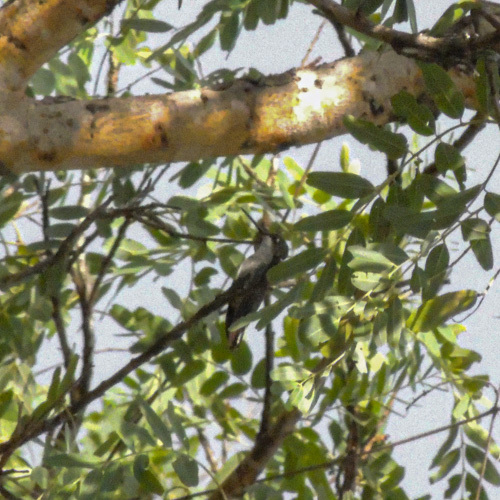
Nome popular:
Nome científico:
Características morfológicas:
Alimentação e comportamento:
Distribuição geográfica:
Nome popular: Beija-flor-tesoura-verde
Nome científico: Thalurania furcata
Características morfológicas: Mede cerca de 9,7 cm de comprimento. Macho com partes superiores esverdeadas,
garganta verde-metálica brilhante, peito e barriga azul-violeta-brilhante, a fronte pode ser verde brilhante,
verde escura ou preta, as infracaudais podem variar do branco ao azul escuro,
cauda furcada azul escura ; fêmea com as partes inferiores cinza, ponta da cauda branca.
Alimentação e comportamento: Alimenta-se em flores à pouca altura, buscando também insetos na vegetação ou
capturando-os no ar. Comum no sub-bosque de florestas altas, capoeiras e florestas de várzea. Vive solitário,
defendendo seu território de maneira agressiva. Em uma floresta no sudoeste amazônico brasileiro, foi verificadoque essa foi uma das espécies nectarívoras mais frequentemente capturadas em clareiras naturais
no interior da floresta, que faz desses ambientes bastante procurado pela espécie.
Distribuição geográfica: Quase todo o Brasil, da Amazônia ao Sudeste. No Sul, apenas no NO do RS. Encontrado
também do México à Bolívia, Paraguai e Argentina.
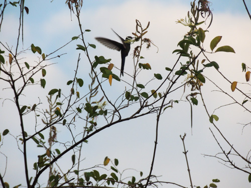
Nome popular:
Nome científico:
Características morfológicas:
Alimentação e comportamento:
Distribuição geográfica:
Nome popular: Beija-flor-tesoura
Nome científico: Eupetomena macroura
Características morfológicas: Mede entre 15 e 18 centímetros de comprimento, sendo um dos maiores beija-flores
brasileiros, pesando em torno de 6-11 gramas. Cabeça, pescoço e parte superior do tórax de um profundo azul violeta;
restante da plumagem verde-escuro iridescente. Pequena mancha branca atrás dos olhos; rêmiges castanho-escuro;
raques das primárias externas alargadas; bico ligeiramente curvado para baixo, preto com 2,2 centímetros de
comprimento. Tem como característica principal a cauda longa e profundamente furcada que toma quase 2/3 do seu
tamanho total. A fêmea é quase igual ao macho, sendo um pouco menor e mais pálida. O imaturo é como a fêmea,
mas a cabeça é particularmente mais pálida e tingida de marrom. Os beija-flores têm o mais acelerado metabolismo
entre as aves.
Alimentação e comportamento: Assim como outros beija-flores, alimenta-se basicamente de néctar de flores, mas
também caça pequenos insetos com grande habilidade em voos curtos. Tem um papel importante na polinização de muitas
plantas. É um dos visitantes mais comuns de bebedouros de água com açúcar, em cidades ou em sítios. É frequentemente
o beija-flor mais comum do Brasil centro-oriental. Vive em áreas semiabertas, bordas de florestas, capoeiras, parques
e jardins, sendo comum até em grandes metrópoles. Não costuma ter medo do ser humano, aproximando-se das pessoas para
se alimentar nas garrafas com água e açúcar ou nas flores de seus jardins. É territorialista e extremamente agressivo,
principalmente na época da reprodução, quando é capaz de atacar outras aves muito maiores e pequenos mamíferos.
Em algumas épocas do ano, quando há menos disponibilidade de néctar, adota uma única árvore, que pode ser um mulungu
ou um ipê, como a sede de seu território e a defende ferozmente contra qualquer outra ave, principalmente contra outros
beija-flores e contra a cambacica. Ocorrem lutas ritualísticas intraespecíficas em voo em defesa do território.
É tão agressivo, que foi avistado se juntando com um bem-te-vi e atacando um gavião-carijó.
Distribuição geográfica: Ocorre das Guiana à Bolívia e Paraguai, todo o Brasil, exceto certas regiões da Amazônia.
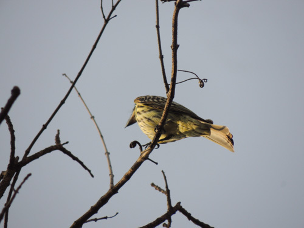
Nome popular:
Nome científico:
Características morfológicas:
Alimentação e comportamento:
Distribuição geográfica:
Nome popular: Bem-te-vi-rajado
Nome científico: Myiodynastes maculatus
Características morfológicas: Mede entre 19 e 23 centímetros de comprimento. A maior das espécies rajadas da
família, destaca-se pelo enorme bico e cabeça desproporcional ao corpo. É do tamanho do bem-te-vi. As listras
superciliares brancas não se unem na nuca, como nas outras espécies de plumagem rajada.
Alimentação e comportamento: Alimenta-se de insetos que apanha em voo a partir do poleiro e também de pequenos
frutos como o da canela-amarela, sendo um provável dispersor de sementes. Gosta muito também das bananas maduras da
embaúba. Aprecia os frutos/sementes da aroeira-do-campo (Schinus lentiscifolius). Adora cigarras e, para comê-las, faz
os seguintes passos: primeiro ele as apanha em pleno voo, em seguida bate a cigarra repetidas vezes em um galho até
suas asas caírem, depois joga o corpo da cigarra para cima e a engole. Habita a parte interna das matas ciliares,
cerradões, cambarazais e matas secas. Ocasionalmente, aparece em áreas de cerrado denso. Não costuma ficar em poleiros
expostos, como as outras espécies rajadas. Apesar do tamanho, confunde-se bem com a folhagem, usando as diferenças de
luz e sombra da região abaixo da copa. Muitas vezes, é difícil distingui-lo nesses locais. Vive em casais ou grupos
familiares, muito agressivos com outros bem-te-vis-rajados. O chamado de contato mais usado e capaz de denunciá-lo
parece um soluço agudo, levemente anasalado, repetido várias vezes. As outras aves respondem e podem encher a mata
com esse som. Sua vocalização consiste em uma série de guinchos repetidos. Passa a maior parte do tempo pousado em
poleiros nas árvores das bordas de matas secundárias, florestas de galeria ou matas de várzea.
Distribuição geográfica: Ocorre desde o México até a Argentina, presente em todos os países sul americanos,
exceto o Chile. Realiza migrações sazonais, indo para as latitudes mais baixas no inverno

Nome popular: Bem-te-vi
Nome científico: Pitangus sulphuratus
Características morfológicas: Ave de médio porte, o bem-te-vi mede entre 20,5 e 25 centímetros de comprimento e
pesa aproximadamente de 52-68 g. Tem o dorso pardo e a barriga de um amarelo vivo; uma listra branca no alto da
cabeça, acima dos olhos; cauda preta. O bico é preto, achatado, longo, resistente e um pouco encurvado. A garganta
é de cor branca. Possui um topete amarelo somente visível quando a ave o eriça em determinadas situações.
O seu canto trissilábico característico lembra as sílabas bem-te-vi, que dão o nome à espécie. Portanto, seu nome
popular possui origem onomatopeica.
Alimentação e comportamento: Possui uma variada alimentação. É insetívoro, podendo devorar centenas de insetos
diariamente. Mas também come frutas , ovos e até mesmo filhotes de outros pássaros, flores de jardins, minhocas,
pequenas cobras, lagartos, crustáceos, além de peixes e girinos de rios e lagos de pouca profundidade e inclusive
pequenos roedores. Costuma comer parasitas de bovinos e equinos. Apesar de ser mais comum vê-lo capturar
insetos pousados em ramos, também é comum atacá-los durante o voo.
Pode capturar aves muito jovens de espécies pequenas que estejam fora do ninho, tendo sido observada a captura de um
jovem bico-de-lacre que era alimentado no chão pelos pais e que provavelmente havia caído do ninho. É uma ave que está
sempre descobrindo novas formas de alimento. Devido ao seu regime alimentar generalista, por vezes contribui para o
controle de pragas de insetos, inclusive cupins urbanos. É agressivo, ameaça até gaviões e urubus quando esses se
aproximam de seu “território”. Costuma pousar em lugares salientes como postes e topos de árvores. Pode-se vê-lo
facilmente cantando em fios de telefone, em telhados ou banhando-se nos tanques ou chafarizes das praças públicas,
demonstrando grande capacidade de adaptação. É um dos primeiros a cantar ao amanhecer. Anda geralmente sozinho, mas pode
ser visto em grupos de três ou quatro que se reúnem habitualmente em antenas de televisão. Podem ser encontrados em áreas
urbanas, matas densas e ambientes aquáticos como lagoas, rios e praias.
Distribuição geográfica: É ave típica da América Latina, com uma distribuição geográfica que se estende predominantemente
do sul do México à Argentina, em uma área estimada em 16.000.000 km².
Entretanto, pode também ser encontrado no sul do Texas e na ilha de Trinidad. Foi introduzido nas Bermudas em 1957, importado
de Trinidad, e na década de 1970 em Tobago. Nas Bermudas, é a terceira espécie de ave mais comum, podendo atingir densidades
populacionais de 8 a 10 pares por hectare.
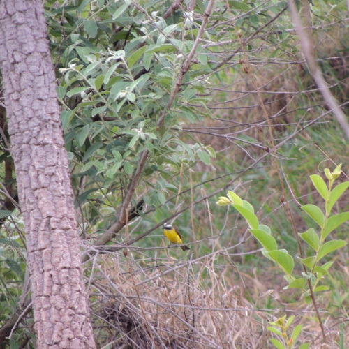
Nome popular:
Nome científico:
Características morfológicas:
Alimentação e comportamento:
Distribuição geográfica:
Nome popular: Bentevizinho-de-asa-ferrugínea
Nome científico: Myiozetetes cayanensis
Características morfológicas: Mede entre 16,5 e 18 centímetros de comprimento e pesa 26 gramas. Apresenta o píleo marrom
escuro fuliginoso com uma grande mancha central quase sempre oculta, de coloração amarelo-laranjado vibrante. Uma larga faixa
superciliar branca com os dois lados opostos confluentes na testa e não confluentes na nuca. As regiões lorais, orbital,
auricular e as laterais do pescoço são de coloração uniforme marrom escuro fuliginoso. A região traseira do pescoço, o dorso,
os escapulários, o uropígio, e as supracaudais são de coloração marrom oliveáceo simples. Asas, supracaudais e retrizes de
coloração geral marrom-escuras com bordas acastanhadas. As rêmiges primárias, secundárias e coberteiras maiores das asas
marginados de verde-oliváceo claro. As rêmiges secundárias distais e primárias proximais são marginados com coloração ferrugínea
intensa. As primárias apresentam margens estreitas com coloração ferrugínea ou rufas. Queixo e garganta são brancos. As demais
partes inferiores, incluindo axilares e coberteiras inferiores das asas, são de coloração amarelo-canário intenso ou apresentam
uniforme coloração amarelo-limão. Bico, pernas e pés pretos; íris marrom escura.
Alimentação e comportamento: O alimento consiste predominantemente de artrópodes que são apanhados com as pontas das mandíbulas.
Habita árvores na vizinhança d'água. Pousa geralmente ereto. O seu nervosismo é denunciado por movimentos bruscos de asas. Gosta
de tomar banho de chuva ou na folhagem molhada. Tem o costume de dormir em grupos ou de buscar um lugar mais abrigado para passar a
noite. É brigão.
Distribuição geográfica: Ocorre do Panamá, através da Amazônia, à Bolívia, Mato Grosso, Goiás, Minas Gerais, Pará e Maranhão.
Também Rio de Janeiro e São Paulo.
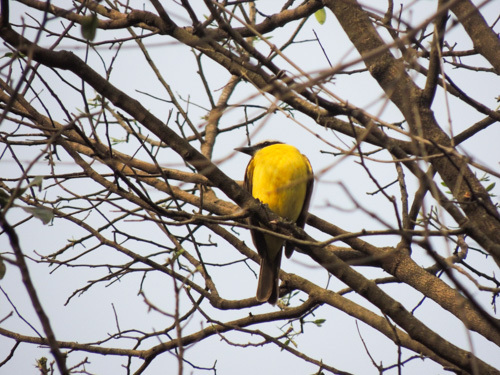
Nome popular:
Nome científico:
Características morfológicas:
Alimentação e comportamento:
Distribuição geográfica:
Nome popular: Bentevizinho-do-brejo
Nome científico: Philohydor lictor
Características morfológicas: Tem 18 centímetros, seu bico é comprido e fino. Possui crista amarela-enxofre, bordas das rêmiges
externas ferrugíneas. Sua voz é um fino “sirr”, “tzri-tzri”.
Alimentação e comportamento: Alimentação consiste de artrópodes. Vive aos pares ou em pequenos grupos familiares. Vive a pouca altura. Pousa
geralmente ereto. O seu nervosismo é denunciado por movimentos bruscos de asas, do pássaro pousado.
Distribuição geográfica: Grande parte do Brasil, em duas regiões separadas:
em toda a Amazônia até o Piauí, e em direção sul até o Mato Grosso e Goiás;
acompanhando a costa, do Pernambuco ao Rio de Janeiro.
Encontrado também no Panamá e nos demais países amazônicos - Guianas, Venezuela, Colômbia, Equador, Peru e Bolívia.
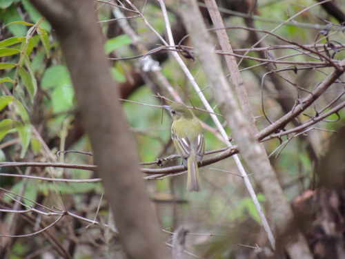
Nome popular:
Nome científico:
Características morfológicas:
Alimentação e comportamento:
Distribuição geográfica:
Nome popular: Cabeçudo
Nome científico: Leptopogon amaurocephalus
Características morfológicas: Mede 13cm. Pousa ereto ou levemente inclinado para cima, desde abaixo da copa até próximo ao chão.
Não é observado em áreas abertas ou fora da vegetação densa. Seu chamado, alto e característico, parece vir de uma ave muito maior.
É uma risada forte e relativamente longa, com as notas bem separadas. Depois de aprendida, consegue-se observá-la com mais facilidade.
Ela não é muito tímida, mas a coloração geral verde garrafa, com lavado de amarelo na barriga, torna difícil de distingui-la no meio
da folhagem.
Alimentação e comportamento: Caça insetos em voo ou embaixo de folhas, saindo do poleiro e apanhando a presa. Não costuma retornar
ao ponto de pouso, indo comer em outro galho e seguindo a patrulha do interior da mata continuamente. Vive solitário ou em casais.
Gosta de pousar nos cipós e galhos finos, em áreas expostas da parte interna da mata. Pousado, levanta com frequência somente uma das asas.
Distribuição geográfica: Ocorre praticamente em todo o Brasil, sendo que grande parte foi observada na Mata Atlântica, na região
Sul e Sudeste do Brasil.
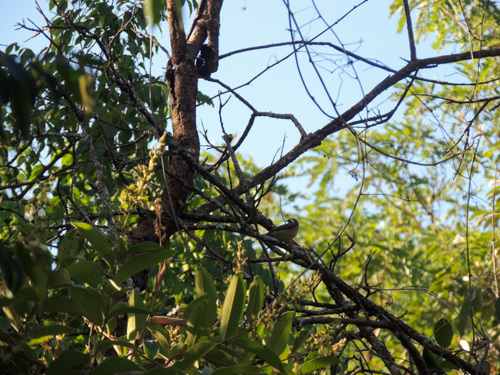
Nome popular:
Nome científico:
Características morfológicas:
Alimentação e comportamento:
Distribuição geográfica:
Nome popular: Cambacica
Nome científico: Coereba flaveola
Características morfológicas: Mede aproximadamente 10,5-11,5 centímetros e pesa cerca de 8-10 gramas. O dorso é marrom-escuro. As
asas e a cauda são marrom-escuras; as rêmiges primárias possuem leve bordeamento esbranquiçado, mais evidente na base. O peito e o
uropígio são amarelos. O ventre e o crisso são amarelo-limão, e por vezes esbranquiçados. A coroa e a face tem coloração preta; evidente
faixa superciliar branca; garganta cinzenta. O bico é curvado e pontudo, preto e de base rosada.
Alimentação e comportamento: Néctar, frutas e artrópodes. Para coletar alimento, em qualquer altura, agarra-se firmemente à coroa
das flores e com o bico curvo e pontiagudo perfura o cálice, atingindo assim os nectários. Visita também as garrafas de água açucarada,
destinadas a atrair beija-flores e comedouros de frutas para pássaros. Aprecia muito banana, mamão, jabuticaba, laranja e melancia,
daí vem seu nome em inglês bananaquit. Vive solitária ou aos pares e é bastante ativa, mas também pode ser vista em pequenos bandos.
Toma banho muitas vezes, por causa do contato com o néctar pegajoso. Seu canto é relativamente forte, simples e monótono, e emitido
incansavelmente. Canta a qualquer hora do dia e em qualquer época do ano. A fêmea também canta, mas pouco e por menos tempo. Para
medrontar um rival, põe-se de pé, estica o corpo e vibra as asas. Muito briguentas, as cambacicas chegam a cair engalfinhadas no solo,
onde continuam a luta. E é até comum aparecer em quintais com bebedouros de beija-flores, mas geralmente espécies como o
beija-flor-tesoura as espanta, ficando com a posse do bebedouro.
Na busca por alimento, muitas vezes fica de cabeça para baixo em um galho, visando atingir a flor. Geralmente está no meio das folhas
e movimenta-se pelo interior da copa. Entretanto, voa bem e atravessa áreas abertas entre matas ou para visitar uma árvore isolada e
florida em um campo. Também visita arbustos isolados e próximos à mata.
É comum em uma grande variedade de hábitats abertos e semiabertos, arborizados, onde existam flores - inclusive em quintais, podendo
se acostumar com a presença humana, não tendo medo da aproximação.
Distribuição geográfica: Ocorre em quase todas as regiões do país, podendo estar ausente de regiões extensivamente florestadas,
como no oeste e centro da Amazônia. É encontrada desde o SE México, América Central e Caribe e em todos os países da América do Sul,
com exceção do Chile e Uruguai. Rara nos Estados Unidos (Flórida) e Cuba.
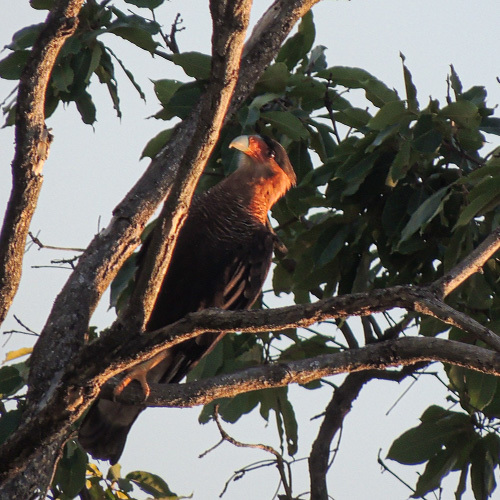
Nome popular:
Nome científico:
Características morfológicas:
Alimentação e comportamento:
Distribuição geográfica:
Nome popular: Carcará
Nome científico: Caracara plancus
Características morfológicas: Medindo cerca de 50-60 centímetros da cabeça a cauda, o peso do macho é de 834 g; a fêmea pesa 953
g e mede cerca de 123 centímetros de envergadura; o carcará é facilmente reconhecível quando pousado, pelo fato de possuir uma espécie
de solidéu preto sobre a cabeça, assim como um bico adunco e alto, que assemelha-se à lâmina de um cutelo; a face é vermelha. É recoberto
de preto na parte superior e possui o peito de uma combinação de marrom claro com riscas pretas, de tipo “carijó”; patas compridas e de cor
amarela; em voo, assemelha-se a um urubu, mas é reconhecível por duas manchas de cor clara na extremidade das asas. Deve seu nome à
vocalização que emite. O peso varia de 786-953 gramas.
Alimentação e comportamento: Não é um predador especializado, e sim um generalista e oportunista, assim como o seu parente próximo, o
carrapateiro. Onívoro, alimenta-se de quase tudo o que acha, de animais vivos ou mortos até o lixo produzido pelos humanos, tanto nas áreas
rurais quanto urbanas. Adaptou-se à presença humana, comendo restos de comida no lixo das casas ou as vísceras de peixe nos acampamentos de
pescadores. Suas estratégias para obtenção de alimento são variadas: caça lagartos, cobras, sapinhos e caramujos; rouba filhotes de outras aves,
até de espécies grandes como garças, colhereiros e tuiuiús; arranha o solo com os pés em busca de amendoim e feijão; apanha frutos de dendê;
ataca filhotes recém-nascidos de cordeiros e outros animais. Também segue tratores que estão arando os campos, em busca de minhocas e larvas ou
pequenos vertebrados, como anfíbios Leptodactylus fuscus. É muito comum ser avistado ao longo das rodovias para
alimentar-se dos animais atropelados. Fica nas proximidades dos ninhais para comer restos de comida caídos no chão, ovos ou filhotes deixados
sem a presença dos pais. Chega a reunir-se a outros carcarás para matar uma presa maior. É também uma ave comedora de carniça e é comumente visto
voando ou pousado junto a urubus pacificamente, principalmente ao longo de rodovias ou nas proximidades de aterros sanitários e locais de depósito
de lixo. Dois hábitos pouco conhecidos são a caça de crustáceos nos manguezais e a pirataria. Vive solitário, aos pares ou em grupos, beneficiando-se
da conversão da floresta em áreas de pastagem, como aconteceu no leste do Pará. Pousa em árvores ou cercas, sendo frequentemente observado no chão,
junto a queimadas e ao longo de estradas. Passa muito tempo no chão, ajudado pelas suas longas patas adaptadas à marcha, mas é também um excelente
voador e planador; costuma acompanhar as correntes de ar ascendentes. Durante a noite ou nas horas mais quentes do dia, costuma ficar pousado nos
galhos mais altos, sob a copa de árvores isoladas ou nas matas ribeirinhas.
Para avisar os outros carcarás de seu território ou comunicação entre o casal, possui um chamado que origina o seu nome comum, “carcará”.
Nesse chamado, dobra o pescoço e mantém a cabeça sobre as costas, enquanto emite o som. É visto com frequência em áreas urbanas.
Distribuição geográfica: Possui uma distribuição geográfica ampla, que vai da Argentina até o sul dos Estados Unidos, ocupando toda uma variedade
de ecossistemas, fora a cordilheira dos Andes. Sua maior população se encontra no sudeste e nordeste do Brasil.
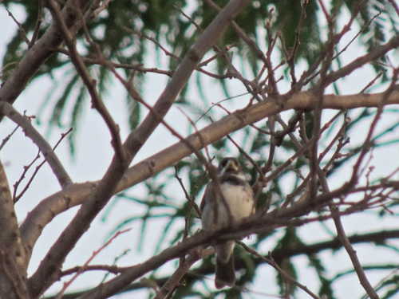
Nome popular:
Nome científico:
Características morfológicas:
Alimentação e comportamento:
Distribuição geográfica:
Nome popular: Coleirinho
Nome científico: Sporophila caerulescens
Características morfológicas: Mede 12 cm e pesa aproximadamente 10,5 g. O macho, com seu inconfundível colar branco e preto recebeu essa denominação.
Além do colar, ao lado da garganta preta um “bigode” branco define a área sob o bico amarelado ou levemente cinza-esverdeado. Existem machos com peito
branco e outros com peito amarelo (ambos pertencem à forma nominal, sendo a forma de peito amarelo apenas um morph ou variação).
A fêmea é toda parda, mais escura nas costas. Sob luz excepcional, é possível ver que ela também possui o esboço do desenho da garganta do macho.
Os machos juvenis saem do ninho com a plumagem idêntica à da fêmea. As fêmeas não são canoras.
Alimentação e comportamento: Congrega-se nos capinzais soltando grãos e usa o bico forte para quebrar as sementes. O nome papa-arroz vem do hábito
de também usar plantações de arroz como fonte de alimentação. Além do arroz, adaptou-se às várias gramíneas trazidas da África e acompanhou a expansão
da pecuária nas áreas anteriormente florestadas. Aprecia os frutos do Tapiá ou Tanheiro . Costuma frequentar comedouros com sementes e quirera de milho.
Fora do período reprodutivo, é uma ave de comportamento gregário, vivendo em grupos de 6 a 20 indivíduos, inclusive às vezes formando grupos mistos com
outras espécies de papa-capins e tizius. O peso e tamanho reduzidos permitem a esta ave alcançar as sementes de gramíneas trepando pela haste das plantas.
Assim como outras aves, o coleirinho foi beneficiado pela introdução de algumas gramíneas africanas, especialmente da braquiária, que parece ser a base de
sua alimentação em áreas alteradas pelo homem. As populações mais meridionais são migratórias e deslocam-se para latitudes mais baixas nos meses mais frios.
Distribuição geográfica: Seu habitat são campos abertos e capinzais, ocorrendo praticamente em todo o Brasil ao sul do rio Amazonas, com exceção da
parte florestal da Região Amazônica ( onde vem expandindo sua área de distribuição se aproveitando da abertura de pastagens e plantações ), ocorrendo também em áreas urbanas

Nome popular: Encontro
Nome científico: Icterus pyrrhopterus
Características morfológicas: Mede cerca de 20 centímetros de comprimento. O macho da espécie tem 33,3 gramas de peso médio e a fêmea 30,4 gramas de peso médio.
O corpo longilíneo, terminado por uma longa cauda, produz uma silhueta característica, ainda mais sublinhada pelo bico fino. Sobre as asas, no encontro
(razão de um dos nomes comuns) apresenta uma área de penas diferenciadas de coloração que vai do amarelo ao castanho forte.
Alimentação e comportamento: Sempre metido no meio da vegetação da copa ou das bordas, procura invertebrados, frutos e flores. Como o joão-pinto, suga o néctar das
flores, abrindo-as ou enfiando o bico, às vezes a cabeça, na corola. Gosta das flores de ipê, tarumã, piúva e pombeiro, umbigo de bananeira, entre outras. Uma das formas
de diferenciar o encontro do inhapim (Icterus cayanensis) é o comportamento mais acrobático de se alimentar. Comum nos ambientes florestados, também utiliza-se de capões
de cerradão e árvores ou arbustos isolados próximos à mata. Vive solitário, aos pares e, eventualmente, em bandos, às vezes junto a bandos mistos. Nas manhãs frias, gosta
de pousar em galhos expostos para tomar sol nas primeiras horas do dia. Uma característica que vem sendo constantemente observada, é que esta ave tem o costume de usar sua
inteligência, quando uma ave maior que ela está se alimentando de um fruto, ele imita sons de aves predadoras para o fim de afugentar as aves e alimentar sua prole com o
fruto conquistado. Ocasionalmente frequenta comedouros com frutos.
Distribuição geográfica: É observado em grande parte do Brasil, exceto na Região Norte do país.
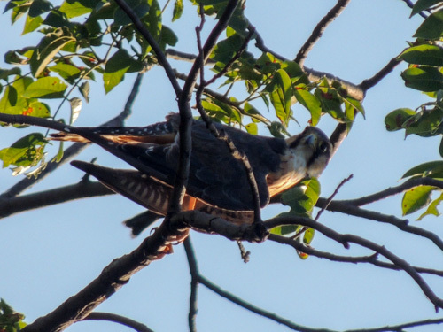
Nome popular:
Nome científico:
Características morfológicas:
Alimentação e comportamento:
Distribuição geográfica:
Nome popular: Falcão-de-coleira
Nome científico: Falco femoralis
Características morfológicas: Ambos os sexos são semelhantes, sendo que a fêmea é maior do que o macho. O macho mede entre 35 e 38 centímetros e pesa entre 208 e 305 gramas.
A fêmea mede entre 43 e 45 centímetros e pesa entre 271 e 460 gramas. Espécie esbelta, de asas e cauda bastante longas. A cabeça, testa, coroa nuca e manto são cinza ardósia com
as bordas das penas brancas. Bochechas e garganta são brancas, separados por uma listra malar escura. Possui largas faixas supra-oculares brancas ligando-se na nuca onde sua
coloração torna-se amareladas e abaixo, uma faixa cinza-ardósia terminando nas laterais da cabeça. A cauda é escura, finamente barrada com cinco faixas brancas e faixa terminal
branca. Na asa aberta nota-se orla posterior nitidamente esbranquiçada, secundárias com larga ponta branca, o que é bem pronunciado em voo. As penas rêmiges são enegrecidas.
Nas partes inferiores apresenta peito branco e o ventre escuro apresenta fino barrado com as penas apresentando as margens ou bordas brancas. O crisso e os calções são castanhos.
O bico é cinza escuro com cere amarelo. Os olhos são marrom escuro com anel periocular amarelo. Tarsos e pés também são amarelados.
O imaturo apresenta as partes superiores na cor castanho escuro com o peito manchado e sobrancelha mais clara.
Alimentação e comportamento: Caça rente ao solo em campos e restingas. Às vezes peneira. Come insetos, também cupins em revoada, lagartixas, morcegos e ocasionalmente pássaros
e até cobras peçonhentas como a jararaca. Aparece nas grandes queimadas, onde pousa em árvores à frente do fogo para localizar presas. Espécie campestre, ocorre em áreas abertas
como campos, cerrados, cerradões, bosques abertos, zonas campestres e urbanas. Em zonas campestres, costuma pousar sobre árvores baixas, mourões de cerca e cupinzeiros, de onde
procura suas presas. Já nas zonas urbanas, pode ser encontrado pousado sobre postes, fios de eletricidade, antenas e borda de edifícios.
Distribuição geográfica: Ocorre dos Estados Unidos à Terra do Fogo, todo o Brasil.
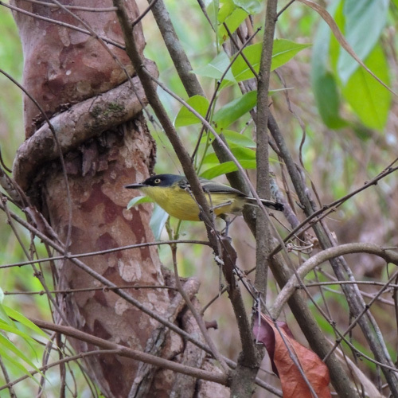
Nome popular:
Nome científico:
Características morfológicas:
Alimentação e comportamento:
Distribuição geográfica:
Nome popular: Ferreirinho-relógio
Nome científico: Todirostrum cinereum
Características morfológicas: O vivo contraste entre o cinza-azulado escuro da cabeça com a parte ventral amarela chama a atenção quando observado.
O restante das partes superiores é lavado de tom oliváceo, enquanto as penas longas das asas são bordejadas de amarelo. A cauda é escura, mas, vista
por baixo, nota-se que as penas laterais possuem uma grande área branca na ponta. Os olhos são amarelo-ouro, destacados contra a área mais escura da
parte frontal da cabeça, quase uma máscara. Bico longo e chato, escuro e também notável. Mede 8-10 cm de comprimento e pesa cerca de 4-7,5 gramas.
O dimorfismo sexual é pouco aparente, restringindo-se a uma marcação esbranquiçada discreta no píleo, para as fêmeas.
Alimentação e comportamento: Alimenta-se de dípteros, lepidópteros e outros. Ativo o dia inteiro, caça invertebrados no meio das folhagens da
copa e baixa até 2 metros do chão. Característico de ambientes mais abertos, não ocorre em áreas extensamente florestadas, sendo muito comum em
cidades. Vive escondido no meio da vegetação baixa e apresenta comportamento característico de movimentar a cauda lateralmente.
O canto origina o nome comum, parecendo com um relógio de mesa quando se dá corda. Canta o ano inteiro, bem como nas horas quentes do dia. O
casal responde um ao outro, também aproximando-se de uma gravação do canto. É encontrado em áreas urbanas pouco ou bem arborizadas dependendo do local.
Gosta muito de habitar a árvore ficus benjamina, onde vai de uma para a outra. Nessa árvore constrói seu ninho. Vive solitário ou aos pares.
Distribuição geográfica: Ocorre desde o sul do México até o NE da Argentina, estando ausente apenas na Amazônia florestal.
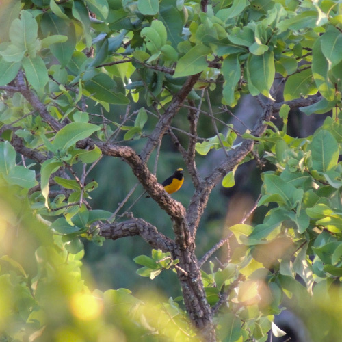
Nome popular:
Nome científico:
Características morfológicas:
Alimentação e comportamento:
Distribuição geográfica:
Nome popular: Fim-fim
Nome científico: Euphonia chlorotica
Características morfológicas: Mede 9,5 centímetros de comprimento e pesa cerca de 8 gramas (macho).
É uma das espécies mais conhecidas do gênero Euphonia. Além do colorido do macho, outra característica marcante nessa ave é o canto assobiado,
usado para contato entre o grupo e origem dos nomes comuns.
Sua voz pode ser facilmente reconhecida: “di-di”, “vi-vi”, “vem-vem” ou “fi-fi” (chamada de ambos os sexos). O canto é fraco, chilreado rápido,
podendo lembrar o de um pintassilgo. Também imita outras aves. Macho e fêmea chamam-se nas andanças pela mata. À distância, pode ser confundido
com um dos chamados do risadinha, quando faz fi-fi.
A fêmea é verde-olivácea, de fronte amarelada e ventre esbranquiçado. É interessante notar que a fêmea possui um canto elaborado também, além do “fi-fi”.
Alimentação e comportamento: Frugívoro. Geralmente pousa ao lado de um cacho de frutos e os ingere um após o outro. As sementes ingeridas
passam intactas pelo tubo digestivo e, quando eliminadas junto com as fezes, muitas vezes aderem a um tronco de árvore ou caem no solo onde
germinam. Dessa forma, esta e outras espécies de Euphonia são consideradas excelentes dispersoras de sementes. Apreciam muito as frutinhas
das ervas-de-passarinho, plantas das famílias lorantáceas e viscaceae; neste último caso, ingerem a polpa dos frutos e a semente, deixando cair
a casca. Em geral, as sementes são defecadas na forma de um “colar de contas” nos galhos, mas algumas vezes podem cair no solo, onde não se desenvolvem.
Existe uma particularidade anatômica que muito singulariza esta ave, que é a não existência de moela, sendo o próprio papo bastante atrofiado.
Tal simplicidade do aparelho digestivo revela claramente o regime frugívoro levado ao extremo. Habita a mata baixa e rala, o cerrado, a caatinga,
cocais e matas serranas (região Sudeste).
Visita as áreas de vegetação mais densa na procura de insetos e frutos, sempre na parte alta da árvore ou arbustos maiores. Costuma movimentar-se
no meio da folhagem das copas, não se aproximando do chão na parte interna da ramagem.
Distribuição geográfica: Ocorre em todas as regiões do Brasil.
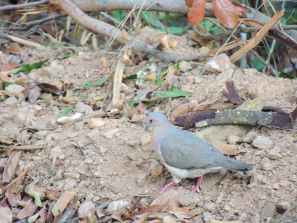
Nome popular:
Nome científico:
Características morfológicas:
Alimentação e comportamento:
Distribuição geográfica:
Nome popular: Juriti-pupu
Nome científico: Leptotila verreauxi
Características morfológicas: Tem 29 centímetros de comprimento e pesa entre 160 e 215 gramas. Sua plumagem é marrom, com peito claro, cabeça
cinzenta com alguns reflexos metálicos na nuca e alto dorso. Quando em voo é possivel notar uma coloraçao vermelho ferrugem em baixo das asas.
Possui, ainda, uma coloração azulada ao redor dos olhos.
Muito arisca, logo voa e se esconde, sendo que na maioria das vezes notamos sua presença pelo canto característico, que é melancólico e repetitivo:
“pu… puuu”, cujo som deu origem a seu nome popular.
Alimentação e comportamento: É granívora e frugívora, pois come grãos, sementes, frutas e vegetais. Com um rápido movimento do bico vira as
folhas mortas para descobrir sementes e frutos caídos; esse movimento também é utilizado para extração de sementes caídas em uma fenda: joga os
grãos no chão para pegá-los em seguida. Vive nas matas e ambientes bem arborizados, vindo frequentemente ao chão à cata dos grãos de que se alimenta.
Comum no chão de habitats quentes, tais como capoeiras e campos adjacentes, bordas de florestas densas e cerrados. Vive solitária ou aos pares.
Alimenta-se de sementes e frutos no chão.Ave arisca. Quando perturbada, foge caminhando sem fazer barulho ou voa, emitindo um som com as asas,
até uma árvore próxima.
Voa bem. Produz um ruído sibilante. Move-se no solo andando com passinhos miúdos e rápidos. Para a cabeça a cada passo dado, durante um instante,
a fim de observar melhor as cercanias. Não saltita nunca. Boceja. Não esconde a cabeça entre as penas do dorso para dormir. Gosta de tomar
banho e prefere beber água nas primeiras horas da manhã ou ao cair da tarde. Após o macho ter galado a fêmea, ela “gala” o macho. Mostra
nervosismo através do balançar da cauda.
Distribuição geográfica: Presente em quase todo o Brasil e também do sul dos Estados Unidos até a Argentina.
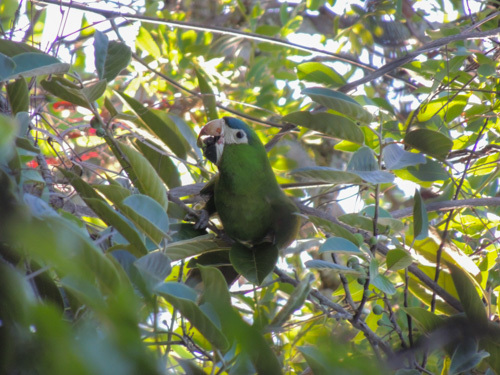
Nome popular:
Nome científico:
Características morfológicas:
Alimentação e comportamento:
Distribuição geográfica:
Nome popular: Maracanã-pequena
Nome científico: Diopsittaca nobilis
Características morfológicas: A maracanã é realmente uma ararinha. Distinguível pela testa azulada, pele branca nos lados do bico e ao redor
dos olhos, ombro e parte média da asa vermelhos, extremo da asa azul. Em voo vê-se a base da asa vermelha, borda da asa amarela e rabo oliva-dourado.
A pele nua em volta dos olhos é característica típica de seu grupo. Mede cerca de 30-35 centímetros de comprimento e o peso varia de 129 a 169 g.
Alimentação e comportamento: Alimenta-se de coquinhos de palmeiras como o dendê e frutos, principalmente o caroço, que tritura com seu possante
bico, utiliza o bico como terceiro pé e usa as patas para segurar a comida, levado-a á boca. costuma comer caranbolas verde.
Comum. Habita uma variedade de ecossistemas, incluindo cerrado, buritizais, beira de matas, caatinga e plantações, até 1400 metros. Vive normalmente
em pares e em grandes bandos fora da época reprodutiva. Pode ser vista com frequência mesmo em grandes cidades como a cidade de São Paulo e Rio de
Janeiro, porém, neste caso, como espécie introduzida.
Distribuição geográfica: Ocorre em toda a região Centro Oeste. Na Região Nordeste é mais restrita ao litoral mas também no interior de MA,
PI e BA. No Sudeste desce até SP. Excassa na Amazônia Central, ocorre localmente em áreas de RR e AP e no sul da Amazônia. Ausente na região Sul.
Vive também no leste dos Andes, Venezuela, Guianas, centro-oeste da Bolívia e sudeste do Peru.
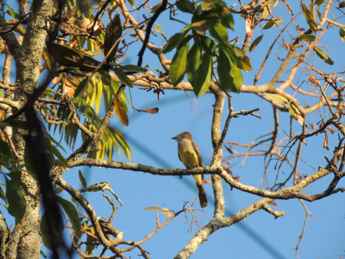
Nome popular:
Nome científico:
Características morfológicas:
Alimentação e comportamento:
Distribuição geográfica:
Nome popular: Maria-cavaleira
Nome científico: Myiarchus ferox
Características morfológicas: Em todas as aves do gênero, a garganta e parte superior cinzas, com a barriga amarela. Dorso escuro, com a cabeça
relativamente grande e penas do topete mantidas semieriçadas. Bico escuro e forte. Cauda longa, do mesmo tom das costas. Nas asas, duas faixas claras
e bordos claros nas penas de voo. Essa espécie, Myiarchus swainsoni e Myiarchus tyrannulus são muito parecidas, de difícil identificação até para
especialistas. O bico é todo preto, embora os detalhes somente possam ser observados de perto e com ótima luz. Assim como outras marias-cavaleiras,
possui a parte inferior amarela, a garganta cinza e as partes superiores castanhas. Os jovens apresentam coloração marrom nas asas e no rabo,
dificultando ainda mais a identificação.
O canto é a característica principal para diferenciação. Um chamado rápido é o mais corriqueiro. Alegre, levemente acelerado no início e terminado
com uma nota um pouco mais longa.
Alimentação e comportamento: Alimenta-se principalmente de insetos alados que captura em voos curtos, retornando ao poleiro em seguida, mas
também caça insetos sobre as folhas e ramos de árvores e consome pequenos frutos. Mantém-se pousado abaixo da copa, seja em matas, seja em áreas
abertas. Usa desde as árvores altas até o sub-bosque das florestas, bem como vive nas áreas de cerrado aberto. É desconfiada, vive no meio da copa
das árvores e é mais fácil ouvi-la do que vê-la. Seus hábitos não diferem muito das outras marias-cavaleiras, pois passa a maior parte do tempo
imóvel, empoleirada no estrato médio de bordas de matas.
Distribuição geográfica: Está presente em todo o Brasil, ocorrendo em simpatria com M. swainsoni, M. tyrannulus e M. tuberculifer ao longo da maior parte da distribuição.
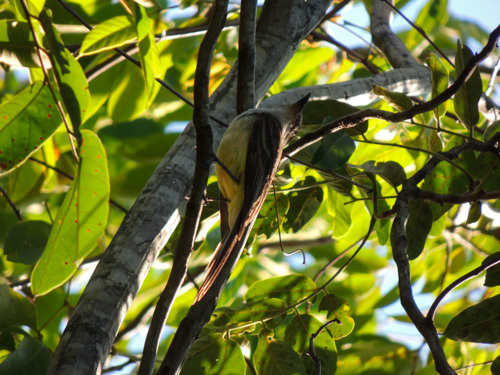
Nome popular:
Nome científico:
Características morfológicas:
Alimentação e comportamento:
Distribuição geográfica:
Nome popular: Maria-cavaleira-de-rabo-enferrujado
Nome científico: Myiarchus tyrannulus
Características morfológicas: Cerca de 1/3 maior do que as outras espécies do gênero, apresenta as penas da cauda com um largo bordo marrom na
parte interna (os juvenis do gênero possuem uma faixa estreita nas duas margens e ponta). Nas asas fechadas, uma linha marrom avermelhada nas penas
de vôo da parte mais externa. Essas características necessitam de condições favoráveis para serem notadas, por exemplo, quando a ave abre as asas ou
a cauda. Mede aproximadamente 22cm. A principal característica (a qual dá o nome popular da espécie) é a face interna da cauda com coloração alaranjada,
facilmente vista olhando a ave de baixo para cima.
Alimentação e comportamento: Como as outras aves do gênero, ao pousar procura insetos em vôo para caçar. Antes de voar, localiza-os com movimentos
lentos de cabeça, mantendo as penas da cabeça e do papo semi-eriçadas. Além dos insetos, alimenta-se de suas larvas, bem como frutos.
Ocorre em todos os ambientes florestados, sendo mais comum na mata seca e no cerradão. Aparece nas áreas de cerrado mais denso. Como também em borda
de matas, campos com árvores esparsas e caatingas.
Distribuição geográfica: Presente em quase todo o Brasil, com exceção de algumas áreas da Amazônia.

Nome popular: Neinei
Nome científico: Megarynchus pitangua
Características morfológicas: Bico extremamente largo e chato, que é, aliás, muito variável; tem o tarso muito curto. Ave que lembra muito
o bem-te-vi (Pitangus sulphuratus), mas seu bico é muito robusto e sua vocalização totalmente difere. Os dois únicos meios de diferenciar o
neinei são pela vocalização, bem diferente da vocalização do bem-te-vi, ou pelo tamanho do bico, que é bem maior que o do bem-te-vi. O problema
é que o bico é mais largo que comprido, então seu tamanho chama mais atenção quando visto por baixo do que de perfil. Mede cerca de 21-23 cm.
E pesa em torno de 52-68 gramas.
Alimentação e comportamento: Seu grande bico o ajuda a apanhar os insetos e as frutinhas dos quais se alimenta. Já foi visto pescando pequenos
peixes e caçando pequenos lagartos e filhotes de outras aves. Ave migratória, sendo encontrada nos meses mais quentes do ano. O casal tem o hábito
de cantar em dueto, porém este é mal sincronizado. Apesar da aparência quase idêntica ao seu primo bem-te-vi, o neinei se comporta de forma um tanto
diferente. É muito mais tímido, sendo mais fácil de ouvir que ver, pois passa a maior parte do seu tempo na copa das árvores. É Frequentemente
encontrado em florestas, paisagens abertas com árvores esparsas, cerrados e áreas urbanas arborizadas, de preferência onde haja água.
É migratório em algumas regiões.
O neinei, apesar de viver praticamente sozinho, pode ser visto em casal ou em um bando de TRÊS indivíduos.
Distribuição geográfica: Ocorre do México a Argentina e em todo o Brasil.
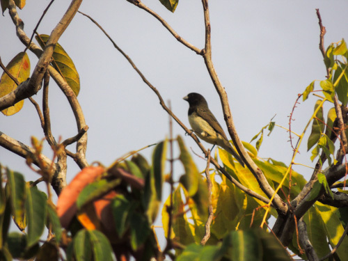
Nome popular:
Nome científico:
Características morfológicas:
Alimentação e comportamento:
Distribuição geográfica:
Nome popular: Papa-capim-de-costas-cinza
Nome científico: Sporophila ardesiaca
Características morfológicas: Possui peito branco e a cabeça e o pescoço cinzento-escuros, o que lhe confere o formato de uma carapuça.
Pode ser confundido com o baiano que se distingue por ter um cinza-esverdeado nas costas e na carapuça e amarelo no peito, mais comum do Brasil
Central, Norte e Nordeste. Seu canto sofre variações regionais e é quase idêntico ao do baiano.
Alimentação e comportamento: Congrega-se nos capinzais soltando grãos e usa o bico forte para quebrar as sementes. O nome papa-arroz vem do
hábito de também usar plantações de arroz como fonte de alimentação. Além do arroz, adaptou-se às várias gramíneas trazidas da África e acompanhou
a expansão da pecuária nas áreas anteriormente florestadas. Aprecia os frutos do Tapiá ou Tanheiro (Alchornea glandulosa). Costuma frequentar
comedouros com sementes e quirera de milho. Costuma se misturar a bandos de outros Sporophila e passa despercebido.
Distribuição geográfica: Ocorre nos estados de Minas Gerais, São Paulo, Espírito Santo, Rio de Janeiro, Goiás e Bahia. Espécie encontrada também na Venezuela.
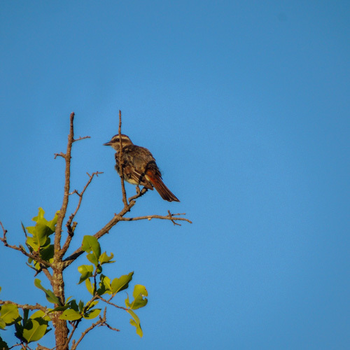
Nome popular:
Nome científico:
Características morfológicas:
Alimentação e comportamento:
Distribuição geográfica:
Nome popular: Peitica
Nome científico: Empidonomus varius
Características morfológicas: Mede cerca de 18 centímetros. A plumagem, toda rajada de cinza escuro, lembra o bem-te-vi-rajado e o bem-te-vi-pirata.
Seu tamanho é intermediário entre as duas espécies, tendo a cabeça e o bico mais proporcionais do que o bem-te-vi-rajado. Característica capaz de separá-la
do bem-te-vi-pirata é o marrom avermelhado da base superior da cauda e os bordos da mesma cor das penas caudais.
Alimentação e comportamento: Alimenta-se basicamente de insetos alados que apanha em voos curtos a partir de um poleiro e também de pequenas frutinhas
como as do tapiá, que apanha tentando pairar no ar como um beija-flor, sem pousar nos galhos. Adota, quase sempre, o mesmo comportamento ao apreciar os
frutos/sementes da aroeira-do-campo (Schinus lentiscifolius). De hábitos migratórios, vive em bordas de matas, capoeiras, clareiras em florestas primárias,
cerradões e outras formações com árvores de tamanho médio, mas não muito fechadas.
Seu canto é um chamado abafado, emitido em pousos tradicionais na copa. Também costuma caçar insetos em voo, retornando para comer a presa nos poleiros.
Distribuição geográfica: Ocorre a leste dos Andes da Argentina até os Estados Unidos, realizando migrações sazonais ao longo de sua distribuição,
deslocando-se para latitudes mais baixas no inverno. Suas migrações são extensas e ainda pouco conhecidas.
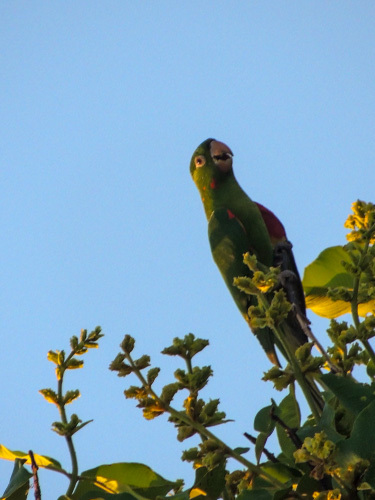
Nome popular:
Nome científico:
Características morfológicas:
Alimentação e comportamento:
Distribuição geográfica:
Nome popular: Periquitão
Nome científico: Psittacara leucophthalmus
Características morfológicas: Possui a cabeça com forma “oval”. Coloração geral verde com os lados da cabeça e pescoço com algumas penas vermelhas,
apenas as coberteiras inferiores pequenas da asa são vermelhas, sendo as grandes inferiores amarelas, chamando muito a atenção em voo, região perioftálmica
nua e branca, íris laranja, bico cor de chifre clara, pés acinzentados. Tamanho médio de 30 á 32 centímetros. O peso varia entre 140 e 171 gramas. Nos jovens
as penas vermelhas da cabeça e sob as asas são ausentes, sendo de cor verde.
Quando em bando vocaliza de forma bem característica.
Alimentação e comportamento: O periquitão-maracanã se alimenta principalmente de frutos e sementes. Habita florestas úmidas, semi-úmidas, pântanos,
florestas de galeria e palmares de buriti nas planícies, até 2500 metros. Não frequenta regiões com rios de águas escuras, e em geral encontra-se em terras
baixas. Voa em bandos de 5 a 40 indivíduos. Dorme coletivamente em variados lugares. É muito frequente em áreas urbanas como do Rio de Janeiro, onde passam
voando em bandos grandes fora do período de reprodução.
Distribuição geográfica: Ocorre em quase todo o Brasil, sendo encontrado desde em florestas até cidades. É uma ave adaptável a ambientes alterados
pelo homem e em alguns locais pode ser considerada uma espécie sinantrópica. É encontrado a leste dos Andes, estendendo-se até o litoral, e desde a Colômbia e
Venezuela até o norte da Argentina e Uruguai, incluindo parte da Amazônia.
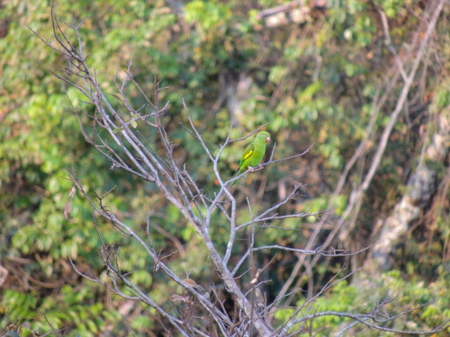
Nome popular:
Nome científico:
Características morfológicas:
Alimentação e comportamento:
Distribuição geográfica:
Nome popular: Periquito-de-encontro-amarelo
Nome científico: Brotogeris chiriri
Características morfológicas: Apresenta uma faixa amarela nas coberteiras superiores das rêmiges secundárias de cada asa, isto é, na região superior
das asas, e uma coloração amarelo-esverdeada em sua face. Os indivíduos adultos medem de 22,0 a 23,5 centímetros de comprimento, a cauda 10 centímetros
e as asas cerca de 12,5 centímetros. Possui bico resistente e de cor branco-amarronzada, com o qual parte seu alimento. Ao redor de seus olhos escuros,
existe uma delimitação branca formada apenas pela pele. Possui difícil diferenciação sexual.
Alimentação e comportamento: Alimenta-se de frutos, sementes, flôres, néctar e cupins. Em certas épocas do ano podem frequentar comedouros com sementes
como milho por exemplo (Observação Pessoal: João de Almeida Prado). Aprecia muito os frutos da Palmeira Jerivá. Estas aves podem ser encontradas em campos
de vegetação baixa, ilhas de matas intercaladas, matas ciliares, cerrados e cerradões. Desloca-se em bandos, muitas vezes de muitos indivíduos. Adaptou-se
aos ambientes urbanos, onde tornou-se muito comum.
Distribuição geográfica: É encontrado no Brasil central e oriental, norte, oeste e sul da Bolívia, nordeste da Argentina (Chaco, Formosa e Misiones),
leste do Paraguai, Uruguai e Peru. No território nacional, ocorre desde o sul ao extremo do Pará (serra do Cachimbo), Ceará, Maranhão, Piauí, Pernambuco,
Bahia, Minas Gerais, Pantanal, Rio de Janeiro e São Paulo.
Existem populações ferais sustentáveis na América do Norte, estabelecidas em Miami no estado da Flórida, e em Los Angeles e São Francisco no estado da Califórnia.
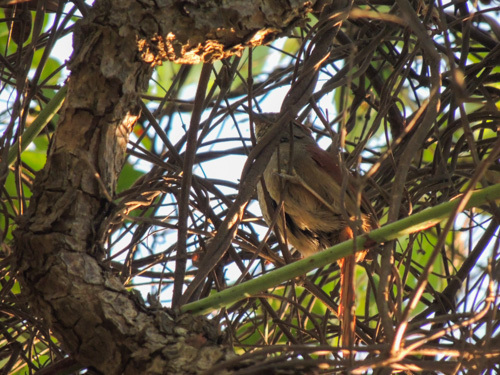
Nome popular:
Nome científico:
Características morfológicas:
Alimentação e comportamento:
Distribuição geográfica:
Nome popular: Petrim
Nome científico: Synallaxis frontalis
Características morfológicas: Mede entre 14 e 16 centímetros de comprimento e pesa entre 11 e 17 gramas.
O adulto destaca-se pela coloração geral marrom-acastanhado. A cabeça apresenta a fronte escura, de coloração marrom-acinzentada, nem sempre presente.
Sua coroa é castanho-avermelhada. Uma listra superciliar mais clara aparece em boas condições de luz, bem como os olhos amarelo-alaranjados, circundados
por algumas penas cinzas mais claras. A área ventral é de coloração cinza claro. A garganta é esbranquiçada com manchas pretas, o peito é de coloração
cinza pálido e o ventre esbranquiçado. Dorso marrom-oliváceo. As coberteiras das asas juntamente com as rêmiges são ruivas, fazendo contraste com o
marrom oliváceo do dorso. A cauda também é ruiva assim como são as coberteiras das asas. Na cauda, as retrizes centrais apresentam coloração
marron-acastanhadas.
Alimentação e comportamento: Sua alimentação consiste de insetos e suas larvas, aranhas, opiliões e outros artrópodes, moluscos etc.
Vive em casais no meio dos arbustos dos cerrados, cerradões e matas secas. Aparece nas partes sempre secas da mata ciliar.
Sua voz é composta por duas notas, a segunda mais alta, sendo o canto repetido continuamente, em especial no começo da manhã.
Distribuição geográfica: Ocorre em quase todo o Brasil, exceto no extremo-oeste da Amazônia.
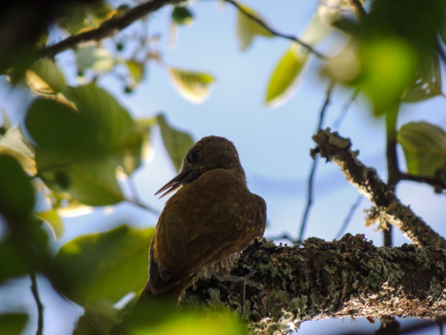
Nome popular:
Nome científico:
Características morfológicas:
Alimentação e comportamento:
Distribuição geográfica:
Nome popular: Pica-pau-pequeno
Nome científico: Veniliornis passerinus
Características morfológicas: Mede 15 cm. Menor representante do gênero Veniliornis. De cor verde-amarelada, mais clara nas partes inferiores.
Coberteiras superiores das asas salpicadas de amarelo; partes inferiores barradas de cinza. Nuca e vértice vermelhos no macho.
Alimentação e comportamento: São predominantemente insetívoros. Os dois sexos costumam estar próximos nos deslocamentos para busca de alimentação.
Acompanham bandos mistos na mata, explorando os troncos e apanhando insetos sob a casca. Furam os galhos e troncos com broca. Assim como outras espécies
de picapaus, o picapauzinho-anão através de pancadas ligeiras, ausculta a árvore para descobrir os lugares carunchados, para posteriormente se alimentar
de larvas e/ou besouros ali presentes. Aprecia algumas frutas como manga e abacate. Vive em áreas abertas, clareiras e bordas de matas secas, caatingas,
cerrados, matas de galeria, de várzea e de terra firme. Encontrado também em mata secundária, mata ripária com bambu, mangues e zonas rurais, pastos e
campos. Encontrado solitário, aos pares ou em grupos familiares. Muito ariscos, movimentam-se rapidamente pelas copas ao perceberem qualquer movimento
estranho. Como os outros pica-paus, escondem-se atrás dos troncos quando percebem uma pessoa, tornando a observação dos detalhes ainda mais difícil.
Observáveis em todos os ambientes florestados, atravessam, em rápidos voos ondulados, áreas de campo entre capões ou árvores isoladas. Aparece em locais
com arbustos densos.
Distribuição geográfica: Ocorre da Venezuela à Bolívia, Paraguai e Brasil amazônico e central (até o oeste do Paraná) e setentro-oriental
(interior do Nordeste):
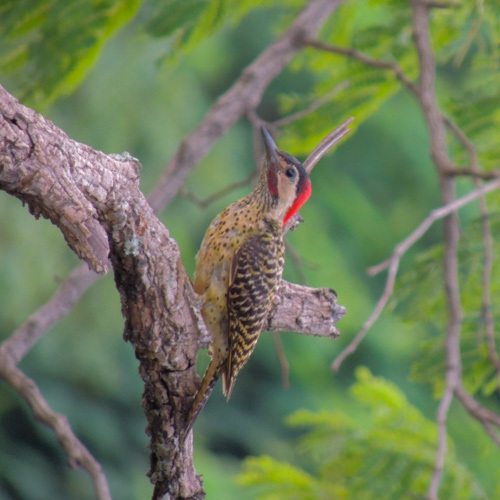
Nome popular:
Nome científico:
Características morfológicas:
Alimentação e comportamento:
Distribuição geográfica:
Nome popular: Pica-pau-verde-barrado
Nome científico: Colaptes melanochloros
Características morfológicas: Mede 28 cm. O tom esverdeado da plumagem camufla ainda mais. Na cabeça, a característica divisão entre vermelho e preto,
única entre os pica-paus, destaca a grande área branca da região dos olhos. De perto e sob boa luz, as bolas pretas na plumagem do peito e barriga podem ser
vistas. Os machos possuem pequeno bigode vermelho na base do bico.
Alimentação e comportamento: Apresenta uma série de adaptações para a alimentação e locomoção. Para capturar formigas e cupins, por exemplo, produz uma
secreção que age como uma cola pegajosa, dando à língua a capacidade preensora de uma vara com visgo. Além disso, a cauda age como órgão de apoio para
substratos verticais. Para subir um tronco, o pica-pau pula para cima, de pés paralelos, “sentando” na cauda a cada parada. Através da ramaria horizontal,
entretanto, pula como uma gralha. Para demarcar território, advertindo rivais, e como meio de comunicação entre machos e fêmeas, executa tamborilações, que
consistem em bater com o bico em paus secos, cascas salientes, troncos ocos e até em chapas de aço, simplesmente para produzir rumor. Alimenta-se de formigas
e larvas de outros insetos, principalmente besouros. Desce até os arbustos e o solo para coletar as primeiras. Come também frutos carnosos, principalmente
no inverno, quando diminui a quantidade de insetos podendo até frequentar comedouros. Vive em matas de galeria, cerrados, cerradões, caatingas, campos com
árvores e na borda de florestas. É cada vez mais comum em áreas urbanas.
Distribuição geográfica: Ocorre desde a foz do rio Amazonas (ilha de Marajó) até o Rio Grande do Sul, e para oeste até o Mato Grosso. É encontrado também
no Paraguai, Argentina e Uruguai.
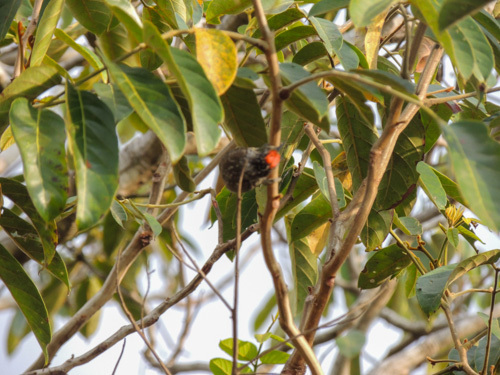
Nome popular:
Nome científico:
Características morfológicas:
Alimentação e comportamento:
Distribuição geográfica:
Nome popular: Picapauzinho-escamoso
Nome científico: iPicumnus albosquamatus
Características morfológicas: Mede entre 10 e 11 centímetros de comprimento e pesa entre 9 e 11 gramas.
O macho possui o alto da cabeça com penas vermelhas. Os membros de um casal costumam estar próximos, comunicando-se entre si através de assobios finos,
longos, muito característicos e mais fáceis de detectar, depois de aprendidos, do que as aves. Além desse chamado, como os outros pica-paus também
tamborilam nas árvores para demarcar território. Em um galho oco batem rapidamente uma sequência de pancadas com o bico. Esse som vai a grandes distâncias,
avisando os vizinhos da presença dos donos do território.
Alimentação e comportamento: Procura larvas de insetos escavando galhos mortos com pancadas vigorosas do bico, como os outros pica-paus.
Encontrada a galeria onde está a broca, arranca pedaços do galho até atingir o inseto, “pescando” a presa com a longa língua viscosa. Acompanha
bandos mistos, quando aves de várias espécies deslocam-se e caçam em grupo. Ocorre em todos os ambientes com árvores e arbustos, mais frequente nas
matas ciliares dos rios, cerradões e matas. Anda tanto nos arbustos baixos, como na parte alta da copa.
Ao contrário dos outros pica-paus, a cauda possui as penas sem o enrijecimento central. Devido a isso, não a apoiam contra os galhos, firmando-se
somente com os pés, os quais são desproporcionais em tamanho para conseguir sustentar a ave. Empoleiram tanto na vertical como na horizontal, movimentando-se
aos saltos e alternando o pé de apoio.
Distribuição geográfica: Ocorre nos estados de Goiás, Maranhão, Mato Grosso, Mato Grosso do Sul, Minas Gerais, Pará, Paraná, Piauí, Rondônia, São Paulo e Tocantins.

Nome popular: Pipira-da-taoca
Nome científico: Eucometis penicillata
Características morfológicas: Mede entre 16 e 17 centímetros de comprimento e pesa entre 22,5 e 35 gramas. Pode lembrar uma fêmea de Tem-tem-de-dragona-branca
(Lanio luctuosus), mas tem píleo amarelo. Oliva por cima, cabeça cinza-clara com crista arrepiada, bico róseo; garganta pardacenta, partes inferiores amarelas.
Arrepia o topete quando canta e costuma manter a cauda entreaberta. O canto é uma sequência apressada e variada de notas agudas e abruptas.
Alimentação e comportamento: Segue correições de formigas. Vive aos pares ou em pequenos grupos caçando frutos e insetos.
Espécie típica de sub-bosques, fica sempre na vegetação, a baixa altura, e quase nunca sai para lugares abertos. Ativa e irrequieta, ergue a crista quando está nervosa
ou agitada. Vista em casal, que às vezes se junta a bandos mistos. Habita cerrados, cerradões, mangues, matas de galeria e matas secas na Amazônia, no Centro-Oeste e
no Sudeste (São Paulo). Na Amazônia frequenta áreas alagadas como florestas de várzea e igapós.
Distribuição geográfica: Presente no Brasil nos estados do Amazonas, Roraima, Amapá, Pará, Maranhão, Acre, Rondônia, Mato Grosso, Mato Grosso do Sul, Goiás e
trechos de Minas Gerais, São Paulo e Paraná além de outros países da América do Sul: Guianas, Venezuela, Colômbia, Peru, Equador, Bolívia e Paraguai.

Nome popular: Pomba-asa-branca
Nome científico: Patagioenas picazuro
Características morfológicas: Uma das maiores espécies da família no País. Cabeça e partes de baixo marrom vinho, barriga pálida. Penas da nuca branco-prateado
com pontas pretas. Manto superior roxo metálico, pontas escuras. Costas na maior parte cinza escuro. Asas marrom apagado, cobertura das asas cinza com pontas pálidas.
Cauda preta. Pele orbital vermelha. A fêmea tem cor mais pálido. Mede cerca de 34 centímetros de comprimento.
Alimentação e comportamento: Alimenta-se de sementes e pequenos frutos geralmente coletados no solo. São granívoros e frugívoros, frequentando roças de milho e feijão,
principalmente após a colheita. Vive nos campos com árvores, áreas urbanas, cerrados, caatingas e florestas de galeria. Frequentemente encontrada no solo. É migratória como
outras pombas, estendendo seus domínios acompanhando o desmatamento, aparecendo em grande quantidade. Voa longas distâncias e a grandes altitudes, exibindo seu espelho alar
branco; está aproveitando as áreas urbanas, é comum ser encontrada comendo milho em galinheiros.
Distribuição geográfica: Ocorre do Nordeste ao Rio Grande do Sul, Goiás, Mato Grosso, São Paulo (nas partes meridionais do país) e também na Bolívia, Argentina e Paraguai.
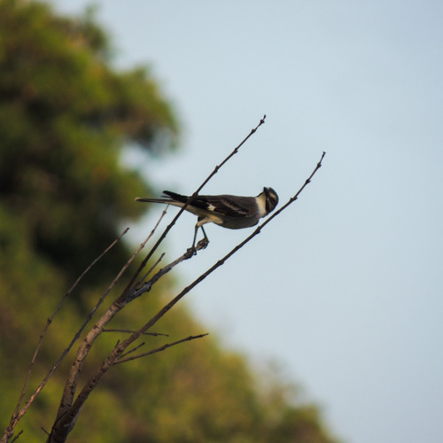
Nome popular:
Nome científico:
Características morfológicas:
Alimentação e comportamento:
Distribuição geográfica:
Nome popular: Primavera
Nome científico: Nengetus cinereus
Características morfológicas: Tem 22,5 centímetros, é cinzenta e branca, olho avermelhado (castanho nos filhotes). Quando voa revela um desenho branco e preto muito destacado na asa.
Alimentação e comportamento: Consiste em insetos, anfíbios, etc. Na ação de caça costuma pousar em pontos altos e expostos (postes, mourões de cerca, antenas etc.),
de onde se lança em voos rápidos e curtos para caçar insetos em pleno voo ou no chão, voltando quase sempre ao mesmo ponto. Costuma acrescentar peixes à dieta.
Vive em regiões campestres e no cerrado. Pousa geralmente ereto. O seu nervosismo é denunciado por movimentos bruscos de asas, do pássaro pousado. Gosta de tomar banho
de chuva ou na folhagem molhada. Pode usar formigas na higiene do corpo. Tem o costume de dormir em grupos ou em buscar um lugar mais abrigado para passar a noite. É brigão.
Distribuição geográfica: Possui ampla distribuição no Brasil. Ocorre do sudeste do Amazonas até o Rio Grande do Sul, Uruguai, Argentina, Paraguai e Bolívia.
No sul emigra durante o inverno. Possui uma pequena população desjunta em uma enclave de Cerrado no Rio Grande do Norte.

Nome popular: Risadinha
Nome científico: Camptostoma obsoletum
Características morfológicas: Mede cerca de 9,5 centímetros. Observando a ave, é possível notar que a cabeça é um pouco mais acinzentada do que as costas,
levemente esverdeadas (isso na pena nova, depois da muda feita entre janeiro e março; posteriormente, acinzentada). Também com as penas novas, destaca-se a
listra branca superciliar. Atrás do olho, linha escura, fina, ressalta a sobrancelha longa. Bico escuro na ponta e base alaranjada, nítida na maior parte
das observações. Costuma eriçar as penas do alto da cabeça, formando um semitopete, com aspecto de despenteado; outras vezes, penas achatadas contra a
cabeça, dando aspecto arredondado a essa área. Barriga amarelada (pena nova; com o desgaste, cinza) e duas listras nas asas, mais amarronzadas depois da
muda e desbotadas após algum tempo, ficando amareladas ou cinza.
Alimentação e comportamento: Caça invertebrados e alimenta-se de frutos. Desconfiado, está sempre movimentando-se bastante, desde a copa das árvores mais destacadas
até próximo ao chão. Aprender a identificá-lo bem auxilia no encontro das outras espécies de tiranídeos pequenos, parecidas no formato, cores ou que possuem cantos
próximos. Além do tamanho e comportamento, característica marcante é o canto. A forma mais chamativa é uma seqüência de notas agudas, altas, descendentes e que parecem
uma risada (origem do nome comum). Há alguma variação no tempo de emissão, provavelmente característica individual. Canta desde o amanhecer até o escurecer. Possui outros
chamados, um deles lembrando o fim-fim ou vi-vi. Respondem um ao outro, bem como a cantos gravados.
Distribuição geográfica: Ocorre em todo o Brasil, nos mais variados ambientes, também na América Central desde a Costa Rica e demais países Sul Americanos
(exceto o Chile), até o centro da Argentina.
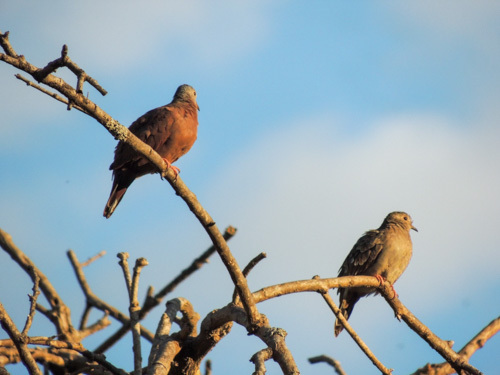
Nome popular:
Nome científico:
Características morfológicas:
Alimentação e comportamento:
Distribuição geográfica:
Nome popular: Rolinha-roxa
Nome científico: Columbina talpacoti
Características morfológicas: Mede 12-18 centímetros de comprimento e pesa cerca de 35-56 gramas.
O macho, com penas marrom avermelhadas, cor dominante no corpo do adulto, em contraste com a cabeça, cinza azulada. A fêmea é toda parda. Nos dois sexos,
sobre a asa há uma série de pontos pretos nas penas. Os filhotes saem com traços da plumagem de cada sexo.
Alimentação e comportamento: Alimenta-se de grãos encontrados no chão. Havendo alimento, reproduz-se o ano inteiro. Costuma frequentar comedouros com sementes e quirera de milho.
Adapta-se aos ambientes artificiais criados pela ação humana. Vive em áreas abertas; o desmatamento facilitou sua expansão, em especial nas áreas formadas para pasto ou agricultura
de grãos. Entrou nas grandes cidades das regiões sudeste e centro-oeste do Brasil.
Muito agressivas entre si, embora possam formar grupos, disputam alimentos e defendem territórios usando uma das asas para dar forte pancadas no oponente. Os machos são mais belicosos.
Nas disputas ou quando tomam sol, deitadas de lado no chão e com a asa esticada para cima, mostram a grande área de penas pretas sob a asa.
Observadores de pássaros do centro-sul de nosso país vêm observando uma “substituição” desta espécie por outra pombinha, a Zenaida auriculata, também conhecida como pomba-de-bando,
amargosinha ou avoante. Esta última espécie vem conquistando o ambiente urbano cada vez mais efetivamente e está aparentemente competindo com a rolinha, que já é menos frequente que a
pomba-de-bando na maioria das cidades do interior de São Paulo.
Seja como for, esta espécie simpática e até mesmo ingênua está longe de desaparecer dos quintais de nossas casas e das praças e jardins de nossas cidades, mesmo que estes estejam em
grandes prédios.
Distribuição geográfica: Historicamente uma das primeiras espécies brasileiras a se adaptar ao meio urbano, ainda é a espécie nativa mais comum em boa parte das grandes
cidades brasileiras. É curioso notar que costuma ser encontrada em maior quantidade em locais alterados pelo homem do que em seu próprio habitat original que são as áreas de
cerrados e campos. Conhecida também como caldo-de-feijão, (rola)rolinha-caldo-de-feijão (PB), picuí-peão, rola, pomba-rola, rola-cabocla (CE), rola-grande, rola-roxa,
rola-sangue-de-boi (PE e BA), rolinha, rolinha-comum, rolinha-vermelha, rolinha-juruti e pomba-café. Em várias áreas do Nordeste do Brasil o nome “rolinha-vermelha” é
usado tanto para se referir a Columbina talpacoti e a fêmea da pararu-azul Claravis pretiosa e, portanto, sugere-se que este nome popular seja evitado.
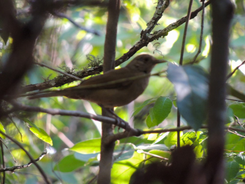
Nome popular:
Nome científico:
Características morfológicas:
Alimentação e comportamento:
Distribuição geográfica:
Nome popular: Sabiá-barranco
Nome científico: Turdus leucomelas
Características morfológicas: O adulto apresenta o alto da cabeça arredondado, acinzentada nos lados e olivácea na parte alta, sem a mácula preta à frente dos olhos.
Bico cinza escuro uniforme. O tom acinzentado domina as costas, tornando-se amarronzado nas asas. Peito acinzentado, com a garganta branca e listras cinza escuro
bem definidas. Quando voa, às vezes mostra a área alaranjada da parte interna das asas. A parte inferior da cauda é clara.
O juvenil tem o dorso pintalgado de bolas amarronzadas, sem a garganta branca bem delimitada. Pontos marrons no peito e barriga. Mede cerca de 22 a 23 centímetros.
Não apresenta dimorfismo sexual, sendo sua diferenciação feita apenas pelo canto, que é característica dos machos.
Alimentação e comportamento: Alimenta-se basicamente de minhocas e artrópodes. Assim como outros sabiás, revira as folhas caídas em busca de pequenos invertebrados e
também se alimenta de pequenos frutos. Aprecia os frutos do tapiá ou tanheiro (Alchornea glandulosa). Costuma frequentar comedouros com frutas. Gosta de frutas tropicais, como a banana.
Foi observado na cidade de Jaú-SP um adulto alimentando-se do néctar das flores da paineira-vermelha ou paineira-da-índia. No sudeste e norte do Brasil a espécie
já foi avistada se alimentando de lagartixas e cobras-cegas. Comum em todas as matas ciliares, matas de galeria, matas secas, cambarazais e cerradões. Utiliza os capões de cerrado
e cruza áreas abertas em voos diretos a meia altura. Acostuma-se com ambientes criados pela ação humana, como jardins, pomares e áreas urbanas bem arborizadas. Canta somente
na primavera, época em que acasala. Adapta-se a diferentes ambientes e também é muito visto em parques urbanos com muita vegetação.
Distribuição geográfica: Presente no Brasil todo.
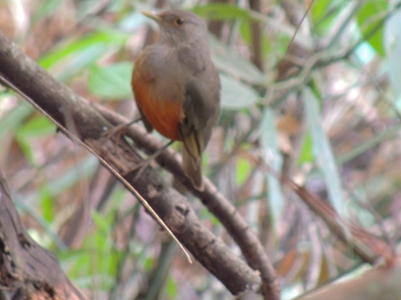
Nome popular:
Nome científico:
Características morfológicas:
Alimentação e comportamento:
Distribuição geográfica:
Nome popular: Sabiá-laranjeira
Nome científico: Turdus rufiventris
Características morfológicas: Mede 20-25 centímetros de comprimento e o macho pesa 70 gramas e a fêmea, 80 gramas.
pesando em média de 68-80 gramas. Tem plumagem parda, com exceção da região do ventre, destacada pela cor vermelho-ferrugem, levemente alaranjada, e bico amarelo-escuro.
Apresenta anel ocular amarelo vivo e garganta clara e escura estriada. Tarsos e pés rosa-cinzento.
É ave de canto muito apreciado, que se assemelha ao som de uma flauta. Canta principalmente ao alvorecer e à tarde. O canto serve para demarcar território e, no caso dos
machos, para atrair a fêmea. A fêmea também canta, mas numa frequência bem menor que o macho. O canto do sabiá-laranjeira é parcialmente aprendido, havendo linhagens
geográficas de tipos de canto, e se a ave conviver desde pequena com outras espécies, pode ser influenciada pelo canto delas e passar a ter um canto “impuro”.
Alimentação e comportamento: Sua nutrição se compõe basicamente de insetos, larvas, minhocas e frutas maduras, incluindo frutas cultivadas como o mamão, a laranja e o
abacate. Come coquinhos de várias espécies de palmeiras e de espécies introduzidas, como o dendê. Cospe os caroços após cerca de 1 hora, contribuindo assim para a
dispersão dessas palmeiras, comportamento apresentado também por outros sabiás. Ração de cachorro também atrai esta espécie, podendo servir de alimento em cidades
grandes com menor disponibilidade de alimentos naturais. Aprecia os frutos do tapiá ou tanheiro (Alchornea glandulosa).
É comum em bordas de florestas, parques, quintais e áreas urbanas arborizadas. Vive solitário ou aos pares, pulando no chão. Em regiões mais secas é, de certa forma,
restrito a áreas próximas à água.
É uma ave que convive bem com ambientes modificados pelo homem, seja no campo ou na cidade, desde que tenha oportunidades de encontrar abrigo, alimento e água.
Na natureza, é encontrado em casais e grupos familiares quando em processo de criação. É uma ave de ambientes abertos, preferindo viver em bordas de matas, pomares,
capoeiras, entorno de estradas, praças e quintais, sempre por perto de água abundante. É um pássaro territorial: demarca uma área geográfica quando está em processo
de reprodução e não aceita a presença de outras aves da espécie. Começa a cantar antes mesmo de clarear o dia. O sabiá-laranjeira vive até 10 anos na natureza. Gosta
de ficar em árvores fechadas e escuras, ou em árvores um pouco abertas.
Sobrevoa áreas alagadas de rios com aves territorialistas como o bem-te-vi e o suiriri, ela não suporta, e ataca-os. O Curutié também acompanha estes bandos mistos.
Distribuição geográfica: Presente do Maranhão ao Rio Grande do Sul, é o sabiá mais conhecido do Sudeste, sendo menos numeroso no Nordeste. Migra para regiões mais quentes no inverno. Encontrado também na Bolívia, Paraguai, Argentina e Uruguai.

Nome popular: Sabiá-poca
Nome científico: Turdus amaurochalinus
Características morfológicas: Para identificá-lo, a característica mácula escura, parecendo ser preta em alguns exemplares, entre o olho e o bico. Além disso,
a cabeça é mais achatada, parecendo que o bico está no mesmo plano da testa. O papo branco e os riscos variam conforme o indivíduo. Algumas aves parecem ter uma
gola branca separando os riscos do peito. Logo que saem dos ninhos, os juvenis apresentam o peito e barriga todo pontilhado de bolas marrom-oliváceas, bem como as
costas e asas pontilhadas de marrom claro. As penas das asas mantém essas características por mais tempo, provavelmente até o segundo ano de vida. Apresenta tamanho
médio em torno de 21 centímetros de comprimento, olhos grandes com uma marca escura no loro, região que fica entre o bico e o olho dando a ele um ar de bravo, bico
longo, forte e pouco curvo, pernas cor-de-avelã. Em agosto inicia-se a reprodução. Nessa época, aparecem as aves com o bico amarelo vivo, uma característica ligada
à reprodução. Aves juvenis ou adultos fora do período reprodutivo têm o bico escuro ou com diferentes proporções de amarelo.
Alimentação e comportamento: Alimentam-se de invertebrados e pequenos frutos, principalmente no solo. Gosta muito do fruto da aroeira (Schinus terebinthifolius)
e dos frutos/sementes da aroeira-do-campo (Schinus lentiscifolius). Como outros sabiás, gostam de ciscar com o bico as folhas secas e escavar o chão. A cada movimento
com o bico para a lateral, dão um salto para trás e ficam procurando presas, imóveis por alguns segundos. Se nada aparece, saltam para a frente, ciscam e retornam à
posição original. Quando os frutos das figueiras estão caindo no chão, concentram-se sob a árvore e fartam-se. Pousado ou no chão, possuem o característico hábito de
balançar a cauda rapidamente na vertical, especialmente quando vocalizam. O piado de contato é traduzido por póca, nome tupi para barulho. Além desse chamado, um
característico miado baixo. Espécie semiflorestal, embora também é visto em bordas de matas e clareiras. Adapta-se também a áreas urbanas muito arborizadas e só canta
na época de reprodução, fora isso só emite chamados fora dessa época. Espécie mais tímida e incomum que o sabiá-barranco e o sabiá-laranjeira, acaba aparecendo e se
expondo com maior frequência durante o período de reprodução.
Distribuição geográfica: Há ocorrência dessa espécie em quase todos os estados do Brasil e na Argentina. Seu período migratório vai dos meses de maio a agosto.

Nome popular: Saí-andorinha
Nome científico: Tersina viridis
Características morfológicas: O macho desta espécie é azul-brilhante, com a cara e a garganta pretas. A fêmea e o macho juvenil são esverdeados, em tom brilhante nas
costas e amarelado nas partes inferiores. Nos dois sexos, há uma série de riscas escuras na plumagem ventral, branca no centro da barriga do macho e amarelada na fêmea.
Possui um forte chamado metálico de contato, sendo muitas vezes escutada antes da primeira visualização.
Alimentação e comportamento: Alimenta-se de frutos e insetos, apanhando esses últimos em voos a partir de galhos expostos. Somente se aproxima do chão para
alimentar-se de frutos maduros caídos, apanhar insetos em voo ou para nidificar. Devido ao formato do bico e cabeça, é capaz de apanhar vários frutos,
carregando-os para um poleiro mais escondido. Os frutos com semente muito grande para ser engolida têm a polpa retirada no esôfago, e a semente é cuspida.
É um excelente dispersor de sementes. Aprecia muito a frutinha do abacateiro-do-mato ou maçaranduba-de-minas (Persea pyrifolia), bem como os frutos vermelhos
da scheflera (Schefflera actinophylla) e os frutos da magnólia-amarela (Magnolia champaca). Costuma viver em bandos durante a maior parte do ano. Os bandos deslocam-se
à procura de alimentos, muitas vezes pousando nos galhos mais expostos de árvores e arbustos em frutificação. Pode ser vista em em bordas de matas e até em zonas mais
arborizadas de cidades. No meio do bando podem ser vistas outras espécies de saís, como por exemplo o saí-azul (Dacnis cayana).
Distribuição geográfica: Surge e desaparece sem que ainda tenha tido o comportamento migratório bem determinado. Parece frequentar certas regiões somente nas épocas
do amadurecimento de frutos dos quais se alimenta.

Nome popular: Saí-azul
Nome científico: Dacnis cayana
Características morfológicas: Mede aproximadamente 13 centímetros de comprimento e pesa, em média, 16 gramas. Apresenta acentuado dimorfismo sexual: o macho é azul e preto,
com as pernas rosadas, enquanto a fêmea é verde, com a cabeça azulada e pernas alaranjadas. Seu canto é um gorjear fraco.
Alimentação e comportamento: Alimenta-se de néctar, insetos e frutas. Costuma frequentar comedouros de frutas. Aprecia os frutos da tapiá ou iricuruna (Alchornea glandulosa)
e da magnólia-amarela (Magnolia champaca). É comum em bordas de florestas, capoeiras arbóreas, campos com árvores esparsas, florestas secas e de galeria. Vive normalmente aos
pares ou em pequenos grupos, procurando insetos ativamente na folhagem ou alimentando-se de frutos em árvores e arbustos. Vive à beira da mata em várias altitudes, copas de
mata alta. Costuma aparecer em pequenos bandos mistos com Cyanerpes e Tangara.
Distribuição geográfica: Ocorre em todas regiões do Brasil. Encontrado também de Honduras ao Panamá e em quase todos os países da América do Sul, com exceção do Chile e Uruguai.

Nome popular: Saíra-Amarela
Nome científico: Stilpnia cayana
Características morfológicas: O macho possui uma plumagem de coloração amarelo-dourada e uma notável máscara preta, que se estende pela garganta e passa pelo meio de toda a
barriga e a fêmea e um amarelo mais fraco , a qual é diferente nas diversas subespécies, que são divididas em dois grupos: cayana e flava. O grupo cayana é encontrado na região
norte da Amazônia e os machos não possuem a máscara preta, mas apenas uma macha escura ao redor dos olhos. O grupo flava é encontrado na maior parte do Brasil, da região Nordeste
até a Sudeste e Centro-Oeste, e os machos possuem a extensa máscara preta.
A fêmea é mais pálida e não possui a máscara de cor preta. Em ambos os sexos as asas apresentam uma coloração verde brilhante.
Pesa cerca de 20g e mede 15 cm.
Alimentação e comportamento: Essa saíra se alimenta de frutos e insetos como cupins e vespas. Costuma freqüentar comedouros e árvores com frutos maduros, como a
aroeira-vermelha(Schinus terebinthifolia), Magnólias(Magnolia spp) e Tapiá ou Tanheiro (Alchornea glandulosa). Habita matas abertas e ciliares, áreas cultivadas, parques e jardins.
Vive aos pares ou em pequenos grupos.
Distribuição geográfica: A espécie é dividida em dois grupos:
O grupo cayana ocorre na região norte da Amazônia, nos seguintes paises: Brasil, Suriname, Guiana Francesa, Guiana, Venezuela e Colômbia.
O grupo flava ocorre na maior parte do Brasil. É encontrado nas regiões Nordeste, Sudeste e Centro-Oeste. Também ocorre no Paraguai e no norte da Argentina.
Ocorrem algumas populações isoladas no Peru e na Bolívia.
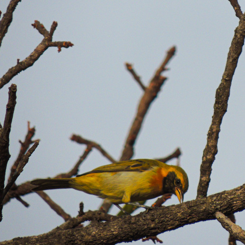
Nome popular:
Nome científico:
Características morfológicas:
Alimentação e comportamento:
Distribuição geográfica:
Nome popular: Saíra-de-papo-preto
Nome científico: Hemithraupis guira
Características morfológicas: Mede cerca de 13 cm de comprimento e pesa 10 g. O macho possui as laterais da cabeça e a garganta pretas, uma estria amarela sobre o olho
e o peito com um colar ferrugíneo e a fêmea apresenta a cabeça olivácea e o peito amarelado.
Alimentação e comportamento: Alimenta-se de frutinhas das árvores e arbustos, ou de epífitas, frutinhas de cipós e pedaços de frutas maiores e seu suco, folhas e néctar.
É localmente comum em bordas de florestas úmidas ou secas, bosques e florestas de galeria. Em regiões densamente florestadas habita principalmente clareiras ou ambientes secundários,
como ilhas de rios. Vive aos pares ou em pequenos grupos, acompanhando bandos mistos com freqüência.
Distribuição geográfica: Presente localmente em grande parte do Brasil, com exceção do noroeste da Amazônia; há também poucos registros de sua ocorrência na região da costa.
Encontrada nos demais países da América do Sul, excetuando-se o Chile e o Uruguai.
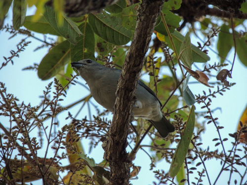
Nome popular:
Nome científico:
Características morfológicas:
Alimentação e comportamento:
Distribuição geográfica:
Nome popular: Sanhaço-cinzento
Nome científico: Thraupis sayaca
Características morfológicas: Mede entre 16 e 19 centímetros de comprimento e pesa entre 28 e 43 gramas.
O adulto de Thraupis sayaca apresenta coloração geral cinzenta, com as asas e cauda de coloração azul turquesa. Sua cabeça é cinza com uma fina e tênue faixa pós ocular
cinza escuro que nem sempre está visível. Testa, coroa e nuca também cinza. Os lores são cinza, da mesma coloração da cabeça. A coloração do manto é cinza, porém mais
escuro que a nuca. As penas coberteiras são cinza azuladas. As rêmiges apresentam bela coloração cinza azulada, com reflexos metálicos esverdeados e com as bordas
internas das penas escuras. O uropígio, assim como as penas supracaudais, são cinza azulados e as retrizes são azuladas com os mesmos reflexos metálicos verdes das
rêmiges. A garganta, peito e ventre são cinza e o crisso é branco.
Os olhos são escuros e o bico apresenta coloração cinza escuro, sendo a porção proximal do bico de coloração mais clara que a porção distal. Tarsos e pés são cinza.
O jovem ou imaturo é similar ao adulto da espécie, entretanto sua coloração é mais esverdeada, mais pálida e mais opaca que este.
Os filhotes são cinzentos e apresentam comissura labial rosada.
Alimentação e comportamento: Frutos, costuma consumir muito o fruto da aroeira-mansa, amoras, folhas, brotos, flores de eucaliptos e insetos, entre estes os alados de
upim “siriris” capturados em voo. Vive normalmente na copa das árvores em busca dos frutos maduros, mas é intrépido o suficiente para apanhar também os caídos, preferindo
até os que já estejam infestados de larvas e desfrutando-os com outras aves, como a saíra-amarela e o sabiá-da-praia. Aprecia muito os frutos do tapiá ou tanheiro
(Alchornea glandulosa) e os frutos/sementes da aroeira-do-campo (Schinus lentiscifolius). Costuma frequentar comedouros com frutas, como a banana e laranja. Foi observado
em Jaú-SP um sanhaço-cinzento alimentando-se das flores de um ipê-amarelo. Alimenta-se de manga, do tipo carlotinha. Quando em casal, o macho, com o
alimento no bico, alimenta a fêmea. Quando um macho apronta-se para agredir outro, seu canto torna-se rouco e monótono. Anda quase sempre em casais ou pequenos bandos. Também
é visto junto com outra espécie de sua família, como o sanhaco-do-coqueiro, cujo canto é bem parecido. É bem ativo. Costuma ter medo de humanos, assim se assustando e voando
desesperadamente. Habita matas abertas, capões, matas ciliares, zonas de cultivo, matas degradadas ou em recuperação, e até mesmo jardins e parques urbanos, tolerando climas
de úmidos a semiáridos. Vive na copa ou entre as árvores à busca de alimentos. Frequenta comedouros com frutas.
Distribuição geográfica: Ocorre nas regiões tropicais e subtropicais ao sul da Amazônia e a leste dos Andes.

Nome popular: Saracura-três-potes
Nome científico: Aramides cajaneus
Características morfológicas: Mede entre 33 e 40 centímetros de comprimento e pesa entre 350 e 466 gramas.
Habitante de mata, camuflada pela cor e pelo padrão da plumagem, possui o dorso castanho-esverdeado, único membro do gênero Aramides com a cabeça e o pescoço de coloração
cinza, garganta esbranquiçada. Dorso e asas marrom oliváceos. Os calções são acinzentados. O peito é castanho-ferruginoso, o uropígio e a cauda são escuros e apresenta um
forte barrado sob as asas que é visto quando a ave levanta voo. O bico apresenta a porção basal de coloração amarelada e a porção distal esverdeada. As pernas e pés são
vermelhos, sendo o tarso mais comprido do que o dedo médio. Os olhos apresentam anel periocular de coloração vermelha e íris também vermelha.
Alimentação e comportamento: É onívora, alimentando-se de capim, sementes, frutas, larvas de insetos, pequenas cobras d'água, pequenos peixes e crustáceos, sempre apanhados
no chão, entre as folhas da mata ou do brejo, bem como na água rasa. Também, quando residente em manguezais, pode se alimentar de pequenos crustáceos enfiando seu bico na toca
dos mesmos com muita rapidez e eficácia. Pode ser observada nas margens dos corixos, nas praias e nas beiras das estradas. Logo que percebe algo estranho, mete-se na vegetação
fechada próxima. Embora possa voar bem, usa as pernas como principal forma de escape. Quando espantada, seu voo é curto, desajeitado e com as pernas pendentes.
Vista em locais abertos, parece com uma galinha, por manter sua cauda levantada entre as asas e pelas típicas passadas. Cisca a terra e folhas com o bico, ressaltando a semelhança
visual. De vez em quando, baixa e levanta a cauda rapidamente, um tique que serve para o contato visual entre os membros do par. Em geral, vive solitária ou em casais.
Pequena e desajeitada, a saracura passa o dia escondida em silêncio, mas nas horas do alvorecer e do fim da tarde, ouve-se seu canto, que diz claramente “três-potes - um coco - um
coco”, e que, segundo a crença popular, é prenúncio de chuva. Macho e fêmea cantam em dueto, cada um emitindo uma parte do canto.
Seu canto ouvido nos momentos crepusculares dá um certo ar de mistério, por ser um som diferente pra quem não conhece a espécie.
Geralmente canta quando começa a chover forte.
Responde imediatamente a qualquer reprodução de seu canto, seja uma outra ave ou playback.
O canto é bem alto (apesar de grave) e varia muito de acordo com a região, principalmente no ritmo, no timbre e no compasso.
Quando o canto ocorre de maneira natural, isto é, sem o uso do playback ou invasores em seu território, cantam de maneira mais melodiosa e seu canto dura cerca de 2 ou 3 minutos.
Mas se a ave é incomodada em seu território por algum playback da espécie, canta de forma mais dura e agressiva e pode cantar por até 10 minutos sem parar.
Distribuição geográfica: No Brasil existem duas subespécies de saracuras três-potes, encontradas em todos os Estados, tanto no litoral como no interior.
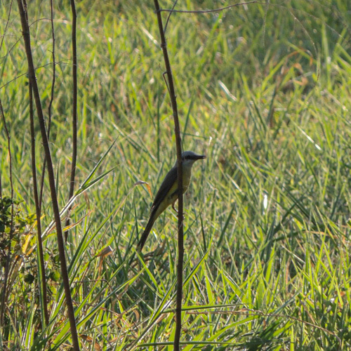
Nome popular:
Nome científico:
Características morfológicas:
Alimentação e comportamento:
Distribuição geográfica:
Nome popular: Suiriri
Nome científico: Tyrannus melancholicus
Características morfológicas: O suiriri (Tyrannus melancholicus) possui a cabeça predominantemente cinza, com a garganta mais clara, tendendo ao branco, e uma faixa difusa
mais escura na região ocular e auricular. O píleo é de coloração laranja — uma característica visível quando eriça o topete em suas disputas territoriais. O peito possui
coloração verde-oliva, destacando-se da coloração amarela da barriga. Mede entre 18 e 24,5 centímetros de comprimento e pesa entre 32 e 43 gramas. Os imaturos
são similares aos adultos, mas as bordas das coberteiras são acastanhadas.
Alimentação e comportamento: A partir do poleiro, realiza um voo de poucos até dezenas de metros, em todas as direções, apanhando a presa no ar. Classicamente, retorna ao
local de origem para consumi-la, muitas vezes batendo fortemente no galho para matá-la ou estonteá-la. Está em seu poleiro nas primeiras horas da manhã e muitas vezes permanece
todo o dia, apesar do sol e calor. Além de insetos, alimenta-se de frutos, esses últimos muito consumidos por aves em migração. Aprecia muito os frutos do tapiá ou tanheiro
(Alchornea glandulosa). Costuma ficar pousado em poleiros expostos, seja na parte alta da mata, seja em arbustos. Usa também fios, cercas e estruturas criadas pela ação humana.
Vive solitário ou em casais, muito agressivos entre si.
Vive em grupos de até duas dezenas de suiriris, que podem ser vistos empoleirando-se próximos, algumas vezes junto a tesourinhas. Durante o dia, fluxos constantes de suiriris
voando na mesma direção a poucos metros das copas podem ser notados, chamando a atenção pela pequena distância entre si e pela continuidade do movimento, às vezes por 30 ou 40
minutos, com 2 ou 3 aves de cada vez.
Canta frequentemente do final da madrugada ao início da noite, geralmente pousado em fios, antenas, mourões de cerca ou nos galhos mais altos das árvores, o que amplia seu
campo de visão para a captura de insetos, defesa da prole, etc. Um fato interessante observado é que os indivíduos costumam escolher os mesmos horários e lugares para seus
gorjeios, mesmo em diferentes épocas do ano. Na época da primavera/verão chega a cantar às 2 ou 3 horas da manhã.
Distribuição geográfica: Ocorre em todo o Brasil e desde os Estados Unidos a quase toda a América do Sul. É uma espécie muito observada no estado de Santa
Catarina entre setembro e começo de abril, época em que ocorre sua nidificação (dezembro/janeiro). Algumas populações migratórias possuem asas mais pontudas, o que pode ser
explicado como uma adaptação para voos longos
A população ocorrente na Argentina, Uruguai, grande parte do Paraguai, extremo sudeste boliviano e sul do Brasil é migratória, indo para a Amazônia a partir de março/abril.
Retorna em outubro, passando pelo Pantanal em abril/maio e em setembro/outubro.
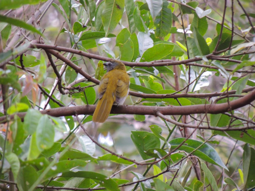
Nome popular:
Nome científico:
Características morfológicas:
Alimentação e comportamento:
Distribuição geográfica:
Nome popular: Tempera-viola
Nome científico: Saltator maximus
Características morfológicas: Mede cerca de 19,5 cm de comprimento. Não apresenta dimorfismo sexual. O canto é uma estrofe curta e suave.
Possui manto com uma bela coloração verde que se estende até a cauda com a mesma coloração. Apresenta a lateral da cabeça, peito e parte superior do ventre na cor cinza,
possui o baixo ventre e crisso na cor canela, sua sobrancelha é curta e espessa, indo do loro até os olhos. Seu bico na cor cinza grafite é forte, maior e mais afilado
que os demais do gênero. A garganta possui duas manchas malares escuras nas laterais como um prolongamento da mandíbula, mancha clara entre elas, abaixo, na porção final
das manchas escuras e entre elas, possui uma mancha castanha que varia de tamanho em cada indivíduo. Pernas e pés na cor cinza.
Difere do Trinca-ferro-verdadeiro pela coloração mais amarronzada do dorso, cauda verde e, principalmente, pela mancha de coloração marrom no pescoço que pode variar de
tamanho.
Os jovens da espécie possuem as cores do dorso e peito esmaecidas, não tão bem definidas como no adulto. Também apresenta comissura labial distinta e bastante pronunciada,
de fácil identificação.
Os jovens não apresentam a plumagem de indivíduos adultos antes dos três ou quatro meses. Sua plumagem diferenciada apresenta o queixo branco e garganta manchados; o
supercilio é manchado de verde oliva e a coroa é verde oliva opaco; o baixo ventre e o crisso são acastanhados.
Alimentação e comportamento: Onívoro, alimenta-se principalmente de frutos.É comum em bordas de florestas, clareiras arbustivas com árvores isoladas, capoeiras e
plantações, principalmente em regiões mais úmidas. Não penetra em regiões serranas. Vive solitário ou aos pares e em bandos mistos pelas copas ou então, pelo estrato médio.
Distribuição geográfica: Presente em toda a Amazônia e nas regiões central e leste do Brasil, estendendo-se para o sul até o Mato Grosso, São Paulo e Rio de Janeiro.
Encontrado também do México ao Panamá, em todos os demais países Amazônicos - Guianas, Venezuela, Colômbia, Equador, Peru e Bolívia - e no Paraguai.
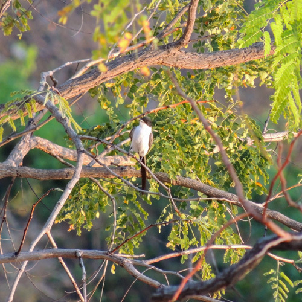
Nome popular:
Nome científico:
Características morfológicas:
Alimentação e comportamento:
Distribuição geográfica:
Nome popular: Tesourinha
Nome científico: Tyrannus savana
Características morfológicas: Apesar de não ser colorida, a leveza e graça do voo, bem como a distribuição de cores são muito chamativas. O capuz é preto, apresenta
no meio do píleo uma coloração amarela, na maioria das vezes escondido, distingue-se contra a garganta e partes inferiores brancas. Dorso cinza uniforme, com destaque
para a longa cauda, que é maior do que o próprio corpo. Há um discreto dimorfismo sexual, sendo que os machos possuem um prolongamento grande da cauda, especialmente
das duas penas mais externas. Esta diferença é visível quando as aves estão próximas. O formato da cauda deu origem aos nomes comuns.
Alimentação e comportamento: Hábitos alimentares como o do suiriri, com grande consumo de frutos no período de migração. Dispersa os frutos da erva-de-passarinho no
cerrado, com sua característica semente onde um pé adesivo ressalta-se. A polpa envolvente é uma das fontes principais de abastecimento na migração para o norte, mas
como não ingere a semente, limpa o bico nos galhos, deixando presa a semente da próxima erva-de-passarinho. Frutos podem ser vistos em fios e arames, resultado dessa
limpeza do bico. Em vôo, consegue uma enorme destreza, alterando direção com facilidade, em perseguições mútuas ou à presa (insetos). Aprecia os frutos/sementes da
aroeira-do-campo (Schinus lentiscifolius). Apesar de migrarem em grupos, em setembro os machos já estão exibindo seu característico vôo territorial, pairando em espirais
com asas e cauda abertos, ao mesmo tempo em que emite o canto longo e rápido, terminado com três ou quatro notas mais espaçadas. Localmente, procuram as áreas abertas,
como os cerrados (daí a razão do savana em seu nome científico), pastagens e áreas de cultura, onde ficam pousadas em mourões de cerca, postes, fios e árvores isoladas.
Também podem procurar as matas, ou até mesmo cidades.
Distribuição geográfica: Talvez poucas aves conheçam melhor a América do Sul do que a tesourinha. Existem tesourinhas que vivem no sul (Argentina, Paraguai e extremo
sul do Brasil), em várias outras partes do Brasil, no Caribe e no sul do México. Depois do verão, as tesourinhas migram aos milhares para a região da Amazônia, onde permanecem
até o inverno acabar. No início da primavera, cada uma volta para a sua região de origem, onde vão reproduzir, criar os filhotes e começar tudo novamente no ano seguinte.
Assim, as tesourinhas são muito abundantes nas regiões onde vivem, mas apenas em algumas épocas do ano. Em outras, desaparecem completamente.
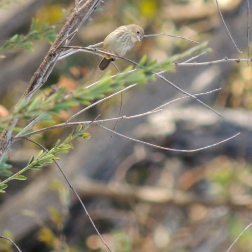
Nome popular:
Nome científico:
Características morfológicas:
Alimentação e comportamento:
Distribuição geográfica:
Nome popular: Tiziu
Nome científico: Volatinia jacarina
Características morfológicas: Tem cerca de 11,5 centímetros de comprimento e por volta de 11 gramas de peso. O macho é todo preto com brilho azul-metálico, exceto por uma
pequena mancha branca na parte inferior das asas.
Apresentam duas mudas de plumagem por ano. Após a muda pós-nupcial adquirem uma plumagem de descanso. O macho adulto perde a plumagem preta azulada da cabeça, do dorso e
do peito e a fêmea tem a plumagem mais clara com a barriga barrada e a asa amarronzada torna-se semelhante aos jovens machos da sua espécie. São raras as espécies residentes
no Brasil que apresentam esse padrão, como alguns caboclinhos (Sporophila bouvreuil, Sporophila ruficollis, Sporophila melanogaster), o tiziu (Volatinia jacarina) e os
beija-flores (Heliomaster squamosus) e (Heliomaster furcifer) .
A fêmea é marrom-oliva na parte superior, amarelo-amarronzado na inferior, com o peito e laterais estriados de escuro. Fêmeas e imaturos são quase idênticos a várias
outras espécies da família, especialmente às fêmeas dos papa-capins.
Alimentação e comportamento: Alimenta-se principalmente de sementes de gramíneas como a braquiária, mas também captura insetos. Costuma frequentar comedouros com sementes e
quirera de milho. Estes pequenos pássaros são vistos com grande frequência, geralmente aos pares, em áreas alteradas, descampados, savanas, campos e capoeiras baixas da América
do Sul, exceto no extremo sul. Vive aos pares durante o período reprodutivo, porém, fora deste, reúne-se em bandos que podem chegar a dezenas de indivíduos. Nestas situações,
frequentemente mistura-se a outras espécies de pássaros que alimentam-se de sementes. Em regiões do Sudeste e Sul do País, como em São Paulo, desaparece durante o inverno,
migrando para regiões mais quentes.
Distribuição geográfica: Presente em todo o Brasil e também do México ao Panamá e em todos os países da América do Sul.